Machine learning orientation
2020-02-07
Chapter 1 Introduction
This document gives on overview of
- Machine learing: Shall we? in chapter 2
- Analysis of the 2019 Kaggle member survey in chapter 22
- Machine learning fundamentals in chapter 4
- Overview of online courses
- Overview online resources in chapter 10MlResources
- Real world example on signal detection in chapter 20
- How to understand ML models: Explainable machine learing in chapter 9
- Further examples from Kaggle in chapter 11
- ML examples in the area
vialytics https://vialytics.de
enbw https://www.enbw.com/infrastruktur/sicherheitsinfrastruktur/geschaeftskunden/produkte/safeplaces
- How to get quickly started with cloud based machine learning platforms in chapter 21
Chapter 2 What is machine learning?
Machine learning is a sub domain of artificial intelligence and has several definitions:

“Field of study that gives computers the ability to learn without being explicitly programmed”
— Arthur Samuel:1
"Learn from experience E with respect to some task T and some performance measure P, if its performance on T, as measured by P, improves with experience E
— Tom Mitchell2
2.1 What is intelligence?
To discuss the question of what is artificial intelligence, the first step is to define what intelligence is.
A group of 52 psychology researchers published in (Gottfredson 1997) the following definition:
A very general mental capability that, among other things, involves the ability to reason, plan, solve problems, think abstractly, comprehend complex ideas, learn quickly and learn from experience. It is not merely book learning, a narrow academic skill, or test-taking smarts. Rather, it reflects a broader and deeper capability for comprehending our surroundings—“catching on,” “making sense” of things, or “figuring out” what to do.
Alfred Binet, a french psychologist who invented first practical IQ test defined in 1905 (Binet and Simon 1916):
Judgment, otherwise called “good sense”, “practical sense”, “initiative”, the faculty of adapting one’s self to circumstances
And Albert Einstein said
The measure of intelligence is the ability to change.
Tegmark’s summarizes the situation in (Tegmark 2017)
There’s no agreement on what intelligence is even among intelligent intelligence researchers! So there’s clearly no undisputed “correct” definition of intelligence.
2.1.1 Definition of artificial intelligence sub domains
Even though there is no undisputed definition of intelligence there is a undisputed definition of how machine learning is related to artificial intelligence
Agreement: Machine learning is a sub domain of artificial intelligence (AI)
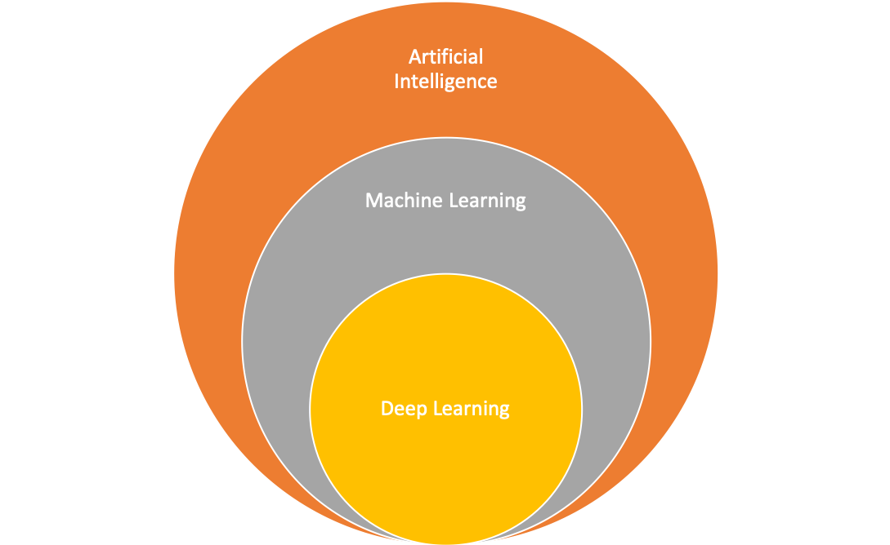
The history of those fields goes back to the 1950’s

2.2 Is AI smarter than humans?
Which of the following questions can a computer answer better?

2.2.1 Thinking, fast and slow (Kahneman 2011)
In Daniel Kahneman’s Thinking, fast and slow (Kahneman 2011) there are plenty of surprising social psychology experiments, on page 166 the following question is posed:
A cab was involved in a hit-and-run accident at night. Two cab companies, the Green and the Blue, operate in the city. You are given the following data:
- 85% of the cabs in the city are Green and 15% are Blue.
- A witness identified the cab as Blue. The court tested the reliability of the witness under the circumstances that existed on the night of the accident and concluded that the witness correctly identified each one of the two colors 80% of the time and failed 20% of the time.What is the probability that the cab involved in the accident was Blue rather than Green?6

Please cast your vote at https://pingo.coactum.de/1576787 or access Pingo webpage scanning QR code below:

2.3 Comparisons between AI and humans
2.3.1 Breast cancer detection
In a Google Health project8 the following results were achieved:
- Absolute reduction of 5.7% and 1.2% (USA and UK) in false positives
- Absolute reduction 9.4% and 2.7% (USA and UK)in false negatives.
In an independent study of six radiologists, the AI system outperformed all of the human readers. More on the study at https://www.nature.com/articles/s41586-019-1799-6
2.3.2 Working together: Lung cancer detection
With an estimated 160,000 deaths in 2018, lung cancer is the most common cause of cancer death in the United States

A study published in Nature medicine9 a team of members of Google AI and several hospitals reported
When prior computed tomography imaging was not available
- Model outperformed all six radiologists
- Absolute reductions of 11% in false positives
- Absolute reductions 5% in false negatives
2.3.3 ImageNet Large Scale Visual Recognition Challenge (ILSVRC)
The ImageNet Large Scale Visual Recognition Challenge10 (ILSVRC) (Russakovsky et al. 2015) evaluates algorithms for object recognition and image classification on a large scale.
Facts of ImageNet:11
- 14 million images
- 20,000 image categories
- 1000 image categories used for ILSVRC
The development of the results is shown in the graph below. The number of layers is a indication of model complexity
In 2017 the problem set to status “solved”
- 29 of 38 competing teams had an accuracy of more than 95%
- ImageNet stopped competition
2.3.4 AlphaGo Zero
Go is a strategy game invented 2500 years ago and has an estimated number of possible board configuration of 10¹⁷⁴ compared to chess which has is 10¹²º. A detailed description is given by DeepMind’s blog post “AlphaGo Zero: Starting from scratch”12
AlphaGo Zero is a version of DeepMind’s13 Go software AlphaGo
No human intervention

- No usage of historical data
- After 3 days of training as good as AlphaGo which beat world champion in 4 out of 5
- After 40 days of training becomes best Go player in the world
AlphaZero learned three games,

The capability progress of Alpha Zero during training is shown below

Figure from https://deepmind.com/blog/article/alphazero-shedding-new-light-grand-games-chess-shogi-and-go
NOTE: EACH TRAINING STEP REPRESENTS 4,096 BOARD POSITIONS.
At the end of the training Alpha Zero achieved the following performance:

Figure from https://deepmind.com/blog/article/alphazero-shedding-new-light-grand-games-chess-shogi-and-go
Implications are wider than just playing a game, as Garry Kasparov, a former world chess champion puts it:
The implications go far beyond my beloved chessboard… Not only do these self-taught expert machines perform incredibly well, but we can actually learn from the new knowledge they produce."
2.4 ML models with bias
Models might end up biased, why is that?
[source: https://www.youtube.com/watch?time_continue=1&v=tlOIHko8ySg&feature=emb_logo]
With a unsuitable reward function an undesired result can occur
Framing the problem

- Goal is business reason, not fairness or avoidance of discrimination
- Goal might lead to unwanted side effects https://openai.com/blog/faulty-reward-functions/
Collecting data

- Unrepresentative of reality
- Collecting images of zebras only when sun shines => model might look for shadow for classifying a zebra
- Reflects existing prejudices
- Historical data might lead recruiting tools to dismiss female candidates
- Unrepresentative of reality
Preparing the data

- Selecting attributes to be considered might lead to bias
- Attribute gender might lead to bias
- Selecting attributes to be considered might lead to bias
2.4.0.1 How to avoid bias
Avoiding bias is harder than you might think
Unknown unknowns
- Gender might be deducted by recruiting tool from use of language
- Imperfect processes
- Test data has same bias as training data
- Bias not easy to discover
2.4.0.2 Human bias
Machine learning model can be biased for several reasons as shown above, how about humans?
Study in Germany

- Judges read description of shoplifter
- Rolled a pair of loaded dice
- Dice = 3 => Average 5 months prison
- Dice = 9 => Average 8 months prison
2.5 Attacks on ML models
Especially image classification models have shown to be susceptible to attacks which leads to wrong classifications. This could lead to
- Traffic sign misclassification
- Avoiding face detection
How a attack can be performed is described by Goodfellow et al. in (Goodfellow, Shlens, and Szegedy 2014)
2.5.1 Adding noise to image leads to misclassification

Figure from Image Credit: Goodfellow et al. (Goodfellow, Shlens, and Szegedy 2014))
2.5.2 But what about attacks on human perception?
Which statement is correct?
Top line longer

- Bottom line longer
- Both are same length
Is this a picture of a real person?
Look at the picture below, is it a real person or an animation?

Figure from https://commons.wikimedia.org/wiki/File:Woman_1.jpg (Image Credit: Owlsmcgee [Public domain] )
The image is create using a generative adversarial network (GAN), see below for the principle, for detailed description see https://medium.com/ai-society/gans-from-scratch-1-a-deep-introduction-with-code-in-pytorch-and-tensorflow-cb03cdcdba0f

Chapter 3 Outlook
What will the future bring for society?
The saddest aspect of life right now is that science gathers knowledge faster than society gathers wisdom.
Isaac Asimov
3.1 Development of life
Tegmark in “Life 3.0: Being human in the age of artificial intelligence” (Tegmark 2017) p. 23. classifies life into three stages and shows the two existing stages of life and the third stage which might be ahead.
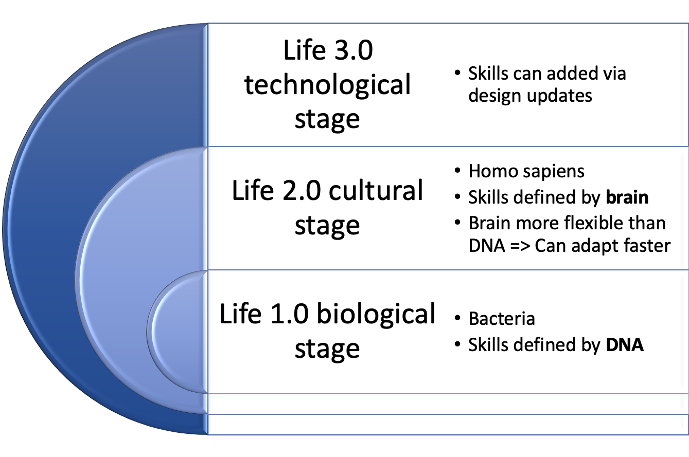
The three stages of life have overlapping skills, but only life 3.0 has all skills and is able to design its hardware and therefore might be able to have unlimited skills

3.1.1 When will superhuman AI come, and will it be good?
Several opinions about when and if superhuman AI will appear and if it will be a good thing or not exists. Those opinions can be grouped as shown in the following graph.

Luddite => A person opposed to new technology or ways of working
Please cast your vote at https://pingo.coactum.de/15767814
3.1.2 AI aftermath scenario
To be prepared we might want to ask yourselves:
- Do you want there to be superintelligence?
- Do you want humans to still exist, be replaced, cyborgized and/or uploaded/simulated?
- Do you want humans or machines in control?
- Do you want AIs to be conscious or not?
- Do you want to maximize positive experiences, minimize suffering or leave this to sort itself out?
- Do you want life spreading into the cosmos?
- Do you want a civilization striving toward a greater purpose that you sympathize with, or are you OK with future life forms that appear content?
Depending on your answers this might lead to one of the following scenario
A verbal description of the scenarios is given below, type the name of the scenario into the left field, if you want more scenarios to be shown increase the “Show entries” entry
3.2 Data religion: Dataism
A data based religion called Dataism is a concept described by Harari in Homo Deus: A brief history of tomorrow (Harari 2016) and says:
- Universe consists of data flow
- Value of entity determined by contribution to data processing
- Collapses barrier between animals and machines15
- electronic algorithms eventually outperform biochemical algorithms
In data we trust
Humans supposed to distill 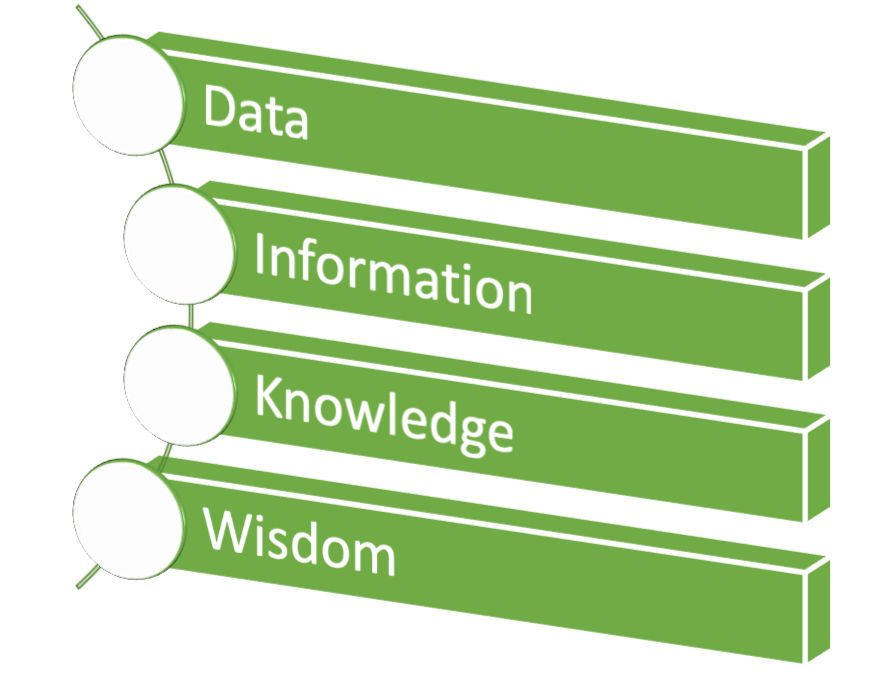
- data => information
- information => knowledge
- knowledge => wisdom
- Dataists
- believe humans can not cope with immense flow of data
- put there trust in Big Data and computer algorithms
Dataism: only wild fantasy?
Dataism entrenched in

- computer science
- biology
- giraffes, tomatoes and human beings are just different methods for processing data
- that is current scientific dogma
Economists interpret economy as data processing system
- Gathering data about desires and abilities
- Turning data into decisions
- Capitalism => distributed processing
- Communism => centralized processing
- Capitalists against high taxes
- capital accumulates at state
- more decisions by single processor, namely government
3.3 Career: Oxford seeks AI ethics professor
- Associate Professorship or Professorship in Philosophy
- Apply for University of Oxford - Faculty of Philosophy (Ethics in AI)
Chapter 4 Machine learning fundamentals
“If intelligence was a cake, unsupervised learning would be the cake, supervised learning would be the icing, and reinforcement learning would be the carry.” – Yann LeCun
Chapter 5 ML project process
Many ML projects get started the wrong way, trying a way to use data rather than using the data to fulfill a need, a need which has a benefit to the organization It is understandable that organizations want to learn from the data they have, but starting without a clear need in mind often leads to wasted efforts because sooner or later it will be discovered that the data available is not sufficient for a useful model.
At the start of a ML project there should be a clear formulated need which should be answered by the model, because ML is only a tool to help to achieve the objectives of the organization
At the beginning there is a need which ML is suitable to fulfill:
- Optimize fertilizer usage
- Improve user experience
- Reduce energy cost
- Increase milk production
Starting with the need the process can be split up in phases as shown below:
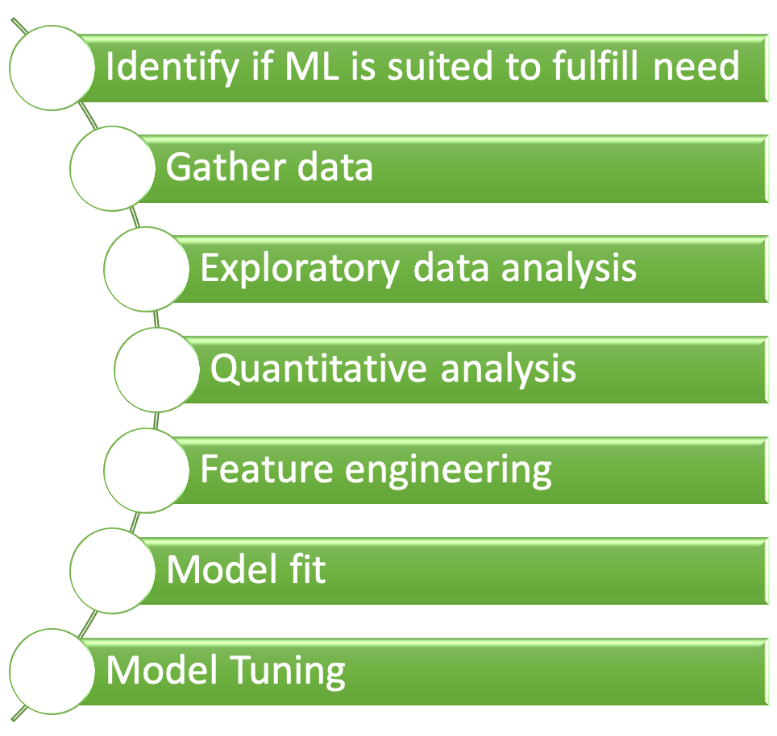
The process is not sequential but highly iterative as is described in the next chapters
5.1 Identify ML suited to fulfill need
There are plenty of needs within an organization and different entities within the organization will have different opinions about how to fulfill those needs. Often the people with the needs are not aware of the potential of ML to fulfill the need, on the other hand, often the people with ML knowledge don’t know of the needs. It is therefore necessary to enable that the right people get in contact.
Enable contact people with:
- Needs
- ML knowlegde
There are plenty of reasons why to choose a ML approach to fulfill the need, but there are also plenty of reasons why not to.
Reasons why ML approach should be chosen:
- Suitable solution
- meets need
- low development effort
- no alternative technology
- Build up ML knowledge
Reasons why ML approach should NOT be chosen:
- Less complex solution available
- Not enough experience to estimate effort
- Regulations might prohibit usage of ML due to testing requirements
ML right now is very fashionable, but if there is no benefit from choosing ML over another solution other than it is more exciting than think twice before you make your choice.
Make sure that the most suitable solution for the need is found, not the fanciest.
5.2 Gather data TBC
Gathering data is one of the key aspects of an ML project with two main questions:
Two fundamental questions:
- How much data is necessary?
- Which data is useful?
5.2.1 How much data is necessary?
There are a number of rules of thumb out there like
-For regression analysis - 10 times as many samples than parameters - For image recognition - 1000 samples per category - can go down significantly using pre-trained models
but those rules a just a rough guidance since there are plenty of factors influencing the data needed
- model complexity
- similarity of data
- the higher the similarity the less new samples help
- noise on data
- more samples
- more computational effort
- for trees might be counterproductive
Sometimes it is easy to create data. When Ayers was thinking about the title of his new book he targeted Google Ads, each with a different title. He got 250,000 samples related to which ad was clicked on most (Ayres 2007).
TBD: - picture of bias and variance similar to https://towardsdatascience.com/breaking-the-curse-of-small-datasets-in-machine-learning-part-1-36f28b0c044d - picture for transfer learning similar to https://medium.com/predict/dealing-with-the-lack-of-data-in-machine-learning-725f2abd2b92
There obviously cannot be a single number as an answer to this question.
Well, you need roughly 10 times as many examples as there are degrees of freedom in your model.
Number of categories to be predicted What is the expected output of your model? Basically, the fewest number or categories the better.
Model Performance If you plan on getting a product in production, you need more. A small dataset might be good enough for a proof of concept but in production, you’ll need way more data.
5.2.2 Which data is useful?
5.3 Exploratory data analysis
5.4 Qunatitiave anaylsis
5.5 Feature engineering
5.6 Model fit
Lastly, the no free lunch theorems say that there is no a-priori superiority for any classifier system over the others, so the best classifier for a particular task is itself task-dependent. However there is more compelling theory for the SVM that suggests it is likely to be better choice than many other approaches for many problems.
5.7 Model tuning
After data gathering iteration is trump
Figure from http://www.feat.engineering/intro-intro.html#the-model-versus-the-modeling-process (Image Credit: Owlsmcgee [Public domain] )
EDA => exploratory data analysis
source http://www.feat.engineering/intro-intro.html#the-model-versus-the-modeling-process]
Exploratory data analysis
- Find correlations or mutial depence
- Quantiative analysis
- Check distribution
- Long tail => log of variable
- Check distribution
- Feature engineering16
- Create and select meaningful features
- Model fit
- Selecting a few suited models
- Model tuning
- Vary model hyperpparameters
5.8 Feature engineering
Variables that go into model are called:
Predictors

- Features
- Independent variables
Quantity being modeled called:
Prediction

- Outcome
- Response
- Dependent variable
From input to output
\[ outcome = f(features) = f(X_1, X_2, \dots, Xp) = f(X) \]
\[ \hat{Y} = \hat{f}(X)\]
Chapter 6 ML types
scikit-learn
A comparison of a several classifiers in scikit-learn on synthetic datasets. The point of this example is to illustrate the nature of decision boundaries of different classifiers. This should be taken with a grain of salt, as the intuition conveyed by these examples does not necessarily carry over to real datasets.
Particularly in high-dimensional spaces, data can more easily be separated linearly and the simplicity of classifiers such as naive Bayes and linear SVMs might lead to better generalization than is achieved by other classifiers.
The plots show training points in solid colors and testing points semi-transparent. The lower right shows the classification accuracy on the test set.
https://scikit-learn.org/stable/auto_examples/classification/plot_classifier_comparison.html#sphx-glr-auto-examples-classification-plot-classifier-comparison-py

Chapter 7 ML algorithms
7.1 Linear regression TBD

{kind=link}
7.2 Logistic regression
Logistic regression is a algorithm with the low computational complexity TBD
- Low computational complexity
- Start algorithm to determine suitable algorithm
- Details of algorithm are given at
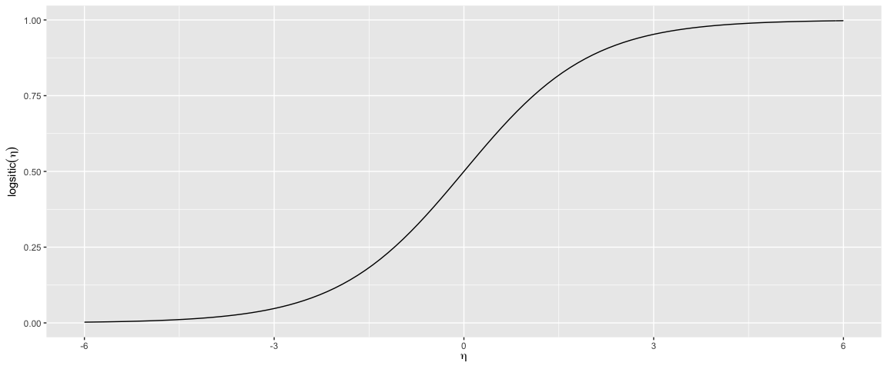
\[ logistic(\eta) = \frac{1}{1+exp^{-\eta}}\]
\[P(Y = 1 \vert X_i = x_i) = \frac{1}{1+exp^{-(\beta_0 + \beta_1X_1+ \dots \beta_n X_n)}}\]
where:
- \(\beta_n\) are the coeffcients we are searching
- \(X_n\) are the features
7.3 Tree based methods TBD
Tree based methods can be used for different predictions:
Types of predictions:
- Regression trees
- predict quantitative response
- Classification trees
- predict qualitative response

Depending on the task the metric to decide how to split the data is different:
Metric for splits:
- Regression
- Residual sum of squares (RSS)
- Goal is to minimize the value
- Classification
- Gini index
- Cross entropy
- Both metrics are numerically very similar
- Goal is to minimize the value
7.3.1 Splitting metrics
Deciding how to split the data at a node is done based on metrics which shall be minimal for the split
Residual sum of squares (RSS):
- Regression trees
- How close are the samples to the mean of all samples in the resulting node
- \(RSS = \sum_{k=1}^{K}\sum_{bi€R_j}(y_i-\hat{y}_{Rj})^2\)
Gini index:
- Classification
- How pure is are the resulting leafs
- \(G = \sum_{k=1}^{K}p_i(1-p_i)\)
Cross-entropy:
How pure is are the resulting leafs
\(D = - \sum_{k=1}^{K}p_i \log_{10}(p_i)\)
An example on how the gini value changes 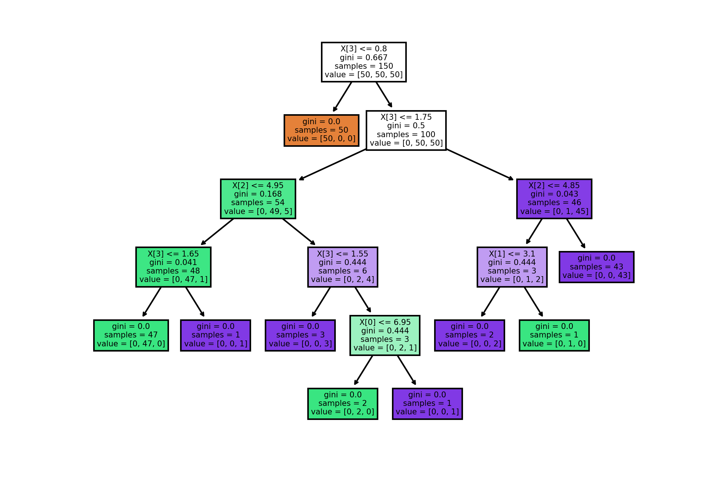
# source: https://scikit-learn.org/stable/auto_examples/tree/plot_iris_dtc.html#sphx-glr-auto-examples-tree-plot-iris-dtc-py
import numpy as np
import matplotlib.pyplot as plt
from sklearn.datasets import load_iris
from sklearn.tree import DecisionTreeClassifier, plot_tree
# Parameters
n_classes = 3
plot_colors = "ryb"
plot_step = 0.02
# Load data
iris = load_iris()
for pairidx, pair in enumerate([[0, 1], [0, 2], [0, 3],
[1, 2], [1, 3], [2, 3]]):
# We only take the two corresponding features
X = iris.data[:, pair]
y = iris.target
# Train
clf = DecisionTreeClassifier().fit(X, y)
# Plot the decision boundary
plt.subplot(2, 3, pairidx + 1)
x_min, x_max = X[:, 0].min() - 1, X[:, 0].max() + 1
y_min, y_max = X[:, 1].min() - 1, X[:, 1].max() + 1
xx, yy = np.meshgrid(np.arange(x_min, x_max, plot_step),
np.arange(y_min, y_max, plot_step))
plt.tight_layout(h_pad=0.5, w_pad=0.5, pad=2.5)
Z = clf.predict(np.c_[xx.ravel(), yy.ravel()])
Z = Z.reshape(xx.shape)
cs = plt.contourf(xx, yy, Z, cmap=plt.cm.RdYlBu)
plt.xlabel(iris.feature_names[pair[0]])
plt.ylabel(iris.feature_names[pair[1]])
# Plot the training points
for i, color in zip(range(n_classes), plot_colors):
idx = np.where(y == i)
plt.scatter(X[idx, 0], X[idx, 1], c=color, label=iris.target_names[i],
cmap=plt.cm.RdYlBu, edgecolor='black', s=15)
plt.suptitle("Decision surface of a decision tree using paired features")
plt.legend(loc='lower right', borderpad=0, handletextpad=0)
plt.axis("tight")
plt.figure(dpi = 300) # Uwe Sterr added dpi argument for better readability of plot
clf = DecisionTreeClassifier().fit(iris.data, iris.target)
plot_tree(clf, filled=True)
plt.show()7.3.2 Ensembles
Prediction ability of a single decision tree is limited, several techniques are employed to enhance the ability. All of them are aimed at buidling a ensemble of trees which combined have a higher prediction ability than a single tree.
Ensembling methods:
7.3.2.1 Bootstrap
Bootstrapping is resembling method that relies on sampling with replacement as shown in the image below

Bootstrap is a widely applicable and extremely powerful statistical tool that allow assigning measures of accuracy associated with a given estimator or statistical learning method.
It is used by the random forest algorithm as described in chapter 7.3.3
7.3.2.2 Bagging
Bagging is short for bootstrap and aggregation and is a general purpose procedure for reducing the variance of a machine learning algorithm. It is particularly useful and frequently used in the context of decision trees.
For random forests the method works as follows:
Bootstrapping for random forest:
- Generate training data by bootstrapping from the original training data set
- Generate a tree
- Repeat this M times
- Predict by averaging the predictions of all trees
7.3.2.3 Boosting
Boosting can be utilized for regression and classification problems. It produces an ensemble of weak learners, typically decision trees. The models are build sequentially allowing optimization of an arbitrary differentiable loss function. An example on how boosting works for tree is given in chapter 7.3.4
7.3.3 Random forest TBD
Random forest has its name from the randomly selected predictors at each split. The Algorithm is described in (Kuhn and Johnson 2013) p. 200:
Random forest algorithm:
- Select number of models to build m
- for each model
- generate bootstrap sample of the original data
- train a tree model for this sample
- at each split
- select randomly k of the original predictors
- select best predictor
- partition the data
- until model stop criteria is meet
- average prediction of all trees for new samples
The algorithm can be depicted as below

Random forests have weaknesses and strengths
Pros and cons of random forest:
- Pro
- Handle higher dimensionality data very well
- Handles missing values well
- Cons
- Due to aggregation of all trees no precise values for regression
7.3.3.1 Python example for random forest
The sample code for a random forest classifier produces a ROC image as shown below

import matplotlib.pyplot as plt
from sklearn.ensemble import RandomForestClassifier
from sklearn.metrics import plot_roc_curve
from sklearn.datasets import load_wine
from sklearn.model_selection import train_test_split
X, y = load_wine(return_X_y=True)
y = y == 2
X_train, X_test, y_train, y_test = train_test_split(X, y, random_state=42)
rfc = RandomForestClassifier(n_estimators=10, random_state=42)
rfc.fit(X_train, y_train)
ax = plt.gca()
rfc_disp = plot_roc_curve(rfc, X_test, y_test, ax=ax, alpha=0.8)
plt.show()7.3.3.2 Parameters for random forest
The parameters are from the scikit-learn webpage https://scikit-learn.org/stable/modules/generated/sklearn.ensemble.RandomForestClassifier.html#sklearn.ensemble.RandomForestClassifier
- n_estimatorsinteger, optional (default=100)
-
The number of trees in the forest.
Changed in version 0.22: The default value of
n_estimatorschanged from 10 to 100 in 0.22. - criterionstring, optional (default=”gini”)
-
The function to measure the quality of a split. Supported criteria are “gini” for the Gini impurity and “entropy” for the information gain. Note: this parameter is tree-specific.
- max_depthinteger or None, optional (default=None)
-
The maximum depth of the tree. If None, then nodes are expanded until all leaves are pure or until all leaves contain less than min_samples_split samples.
- min_samples_splitint, float, optional (default=2)
-
The minimum number of samples required to split an internal node:
-
If int, then consider
min_samples_splitas the minimum number. -
If float, then
min_samples_splitis a fraction andceil(min_samples_split * n_samples)are the minimum number of samples for each split.
Changed in version 0.18: Added float values for fractions.
-
- min_samples_leafint, float, optional (default=1)
-
The minimum number of samples required to be at a leaf node. A split point at any depth will only be considered if it leaves at least
min_samples_leaftraining samples in each of the left and right branches. This may have the effect of smoothing the model, especially in regression.-
If int, then consider
min_samples_leafas the minimum number. -
If float, then
min_samples_leafis a fraction andceil(min_samples_leaf * n_samples)are the minimum number of samples for each node.
Changed in version 0.18: Added float values for fractions.
-
- min_weight_fraction_leaffloat, optional (default=0.)
-
The minimum weighted fraction of the sum total of weights (of all the input samples) required to be at a leaf node. Samples have equal weight when sample_weight is not provided.
- max_featuresint, float, string or None, optional (default=”auto”)
-
The number of features to consider when looking for the best split:
-
If int, then consider
max_featuresfeatures at each split. -
If float, then
max_featuresis a fraction andint(max_features * n_features)features are considered at each split. -
If “auto”, then
max_features=sqrt(n_features). -
If “sqrt”, then
max_features=sqrt(n_features)(same as “auto”). -
If “log2”, then
max_features=log2(n_features). -
If None, then
max_features=n_features.
Note: the search for a split does not stop until at least one valid partition of the node samples is found, even if it requires to effectively inspect more than
max_featuresfeatures. -
- max_leaf_nodesint or None, optional (default=None)
-
Grow trees with
max_leaf_nodesin best-first fashion. Best nodes are defined as relative reduction in impurity. If None then unlimited number of leaf nodes. - min_impurity_decreasefloat, optional (default=0.)
-
A node will be split if this split induces a decrease of the impurity greater than or equal to this value.
The weighted impurity decrease equation is the following:
N_t / N * (impurity - N_t_R / N_t * right_impurity - N_t_L / N_t * left_impurity)
where
Nis the total number of samples,N_tis the number of samples at the current node,N_t_Lis the number of samples in the left child, andN_t_Ris the number of samples in the right child.N,N_t,N_t_RandN_t_Lall refer to the weighted sum, ifsample_weightis passed.New in version 0.19.
- min_impurity_splitfloat, (default=1e-7)
-
Threshold for early stopping in tree growth. A node will split if its impurity is above the threshold, otherwise it is a leaf.
Deprecated since version 0.19:
min_impurity_splithas been deprecated in favor ofmin_impurity_decreasein 0.19. The default value ofmin_impurity_splitwill change from 1e-7 to 0 in 0.23 and it will be removed in 0.25. Usemin_impurity_decreaseinstead. - bootstrapboolean, optional (default=True)
-
Whether bootstrap samples are used when building trees. If False, the whole datset is used to build each tree.
- oob_scorebool (default=False)
-
Whether to use out-of-bag samples to estimate the generalization accuracy.
- n_jobsint or None, optional (default=None)
-
The number of jobs to run in parallel.
fit,predict,decision_pathandapplyare all parallelized over the trees.Nonemeans 1 unless in ajoblib.parallel_backendcontext.-1means using all processors. See Glossary for more details. - random_stateint, RandomState instance or None, optional (default=None)
-
Controls both the randomness of the bootstrapping of the samples used when building trees (if
bootstrap=True) and the sampling of the features to consider when looking for the best split at each node (ifmax_features < n_features). See Glossary for details. - verboseint, optional (default=0)
-
Controls the verbosity when fitting and predicting.
- warm_startbool, optional (default=False)
-
When set to
True, reuse the solution of the previous call to fit and add more estimators to the ensemble, otherwise, just fit a whole new forest. See the Glossary. - class_weightdict, list of dicts, “balanced”, “balanced_subsample” or None, optional (default=None)
-
Weights associated with classes in the form
{class_label: weight}. If not given, all classes are supposed to have weight one. For multi-output problems, a list of dicts can be provided in the same order as the columns of y.Note that for multioutput (including multilabel) weights should be defined for each class of every column in its own dict. For example, for four-class multilabel classification weights should be [{0: 1, 1: 1}, {0: 1, 1: 5}, {0: 1, 1: 1}, {0: 1, 1: 1}] instead of [{1:1}, {2:5}, {3:1}, {4:1}].
The “balanced” mode uses the values of y to automatically adjust weights inversely proportional to class frequencies in the input data as
n_samples / (n_classes * np.bincount(y))The “balanced_subsample” mode is the same as “balanced” except that weights are computed based on the bootstrap sample for every tree grown.
For multi-output, the weights of each column of y will be multiplied.
Note that these weights will be multiplied with sample_weight (passed through the fit method) if sample_weight is specified.
- ccp_alphanon-negative float, optional (default=0.0)
-
Complexity parameter used for Minimal Cost-Complexity Pruning. The subtree with the largest cost complexity that is smaller than
ccp_alphawill be chosen. By default, no pruning is performed. See Minimal Cost-Complexity Pruning for details.New in version 0.22.
- max_samplesint or float, default=None
-
If bootstrap is True, the number of samples to draw from X to train each base estimator.
-
If None (default), then draw
X.shape[0]samples. -
If int, then draw
max_samplessamples. -
If float, then draw
max_samples * X.shape[0]samples. Thus,max_samplesshould be in the interval(0, 1).
New in version 0.22.
-
7.3.4 Boosted trees TBD
Boosted trees are an ensemble of weak learners where each learner is build on the knowledge gained by all previous learners.
The following image depicts the algorithm which can be summarized:
Boosted tree algorithm
- Generate small tree
- Calculate residuals for all samples
- Use residuals to generate next tree
- Combine all trees to build new model
- Repeat from step 1.
The algorithm is depicted below

Figure based on (Zhang et al. 2018), added explanation at the right hand side
Boosted trees have weaknesses and strengths
Pros and cons of boosted trees:
- Pro
- Supports different loss functions
- Cons
- Prone to overfitting
- Carefully tuning of hyperparameters is required
The algorithm of boosted trees for regression is described in a rather mathematically way in (James et al. 2013) p. 323:
- Set \(\hat{f} = 0\) and \(r_i = y_i\) for all \(i\) in the training set
- For \(b=1,2,\dots,B\) repeat:
- Fit a tree \(\hat{f}^b\) with \(d\) splits (\(d+1\) terminal nodes) to the training data \((X,r)\)
- Update \(\hat{f}\) by adding in a shrunken version of the new tree \(\hat{f}(x) \leftarrow \hat{f}(x) + \lambda \hat{f}^b(x)\)
- Update the residuals \(r_i \leftarrow r_i + \lambda \hat{f}^b(x_i)\)
- Output the boosted model \(\hat{f}(x) = \sum_{b=1}^{B}\lambda \hat{f}^b(x)\)
Another introduction to boosted trees is given at the XGBoost Documentation with a thorough mathematical explanation of the approach.
7.3.4.1 Python examples for boosted trees
A popular library for boosted trees in Python is XGBoost, the documentation is hosted at https://xgboost.readthedocs.io/en/latest/.
Plenty of examples are on the GitHub page https://github.com/dmlc/xgboost/tree/master/demo/guide-python.
The example script basic_walkthrough.py is shown below
#!/usr/bin/python
import numpy as np
import scipy.sparse
import pickle
import xgboost as xgb
### simple example
# load file from text file, also binary buffer generated by xgboost
dtrain = xgb.DMatrix('../data/agaricus.txt.train')
dtest = xgb.DMatrix('../data/agaricus.txt.test')
# specify parameters via map, definition are same as c++ version
param = {'max_depth':2, 'eta':1, 'silent':1, 'objective':'binary:logistic'}
# specify validations set to watch performance
watchlist = [(dtest, 'eval'), (dtrain, 'train')]
num_round = 2
bst = xgb.train(param, dtrain, num_round, watchlist)
# this is prediction
preds = bst.predict(dtest)
labels = dtest.get_label()
print('error=%f' % (sum(1 for i in range(len(preds)) if int(preds[i] > 0.5) != labels[i]) / float(len(preds))))
bst.save_model('0001.model')
# dump model
bst.dump_model('dump.raw.txt')
# dump model with feature map
bst.dump_model('dump.nice.txt', '../data/featmap.txt')
# save dmatrix into binary buffer
dtest.save_binary('dtest.buffer')
# save model
bst.save_model('xgb.model')
# load model and data in
bst2 = xgb.Booster(model_file='xgb.model')
dtest2 = xgb.DMatrix('dtest.buffer')
preds2 = bst2.predict(dtest2)
# assert they are the same
assert np.sum(np.abs(preds2 - preds)) == 0
# alternatively, you can pickle the booster
pks = pickle.dumps(bst2)
# load model and data in
bst3 = pickle.loads(pks)
preds3 = bst3.predict(dtest2)
# assert they are the same
assert np.sum(np.abs(preds3 - preds)) == 0
###
# build dmatrix from scipy.sparse
print('start running example of build DMatrix from scipy.sparse CSR Matrix')
labels = []
row = []; col = []; dat = []
i = 0
for l in open('../data/agaricus.txt.train'):
arr = l.split()
labels.append(int(arr[0]))
for it in arr[1:]:
k,v = it.split(':')
row.append(i); col.append(int(k)); dat.append(float(v))
i += 1
csr = scipy.sparse.csr_matrix((dat, (row, col)))
dtrain = xgb.DMatrix(csr, label=labels)
watchlist = [(dtest, 'eval'), (dtrain, 'train')]
bst = xgb.train(param, dtrain, num_round, watchlist)
print('start running example of build DMatrix from scipy.sparse CSC Matrix')
# we can also construct from csc matrix
csc = scipy.sparse.csc_matrix((dat, (row, col)))
dtrain = xgb.DMatrix(csc, label=labels)
watchlist = [(dtest, 'eval'), (dtrain, 'train')]
bst = xgb.train(param, dtrain, num_round, watchlist)
print('start running example of build DMatrix from numpy array')
# NOTE: npymat is numpy array, we will convert it into scipy.sparse.csr_matrix in internal implementation
# then convert to DMatrix
npymat = csr.todense()
dtrain = xgb.DMatrix(npymat, label=labels)
watchlist = [(dtest, 'eval'), (dtrain, 'train')]
bst = xgb.train(param, dtrain, num_round, watchlist)The parameters below are from their webpage https://xgboost.readthedocs.io/en/latest/parameter.html#learning-task-parameters
Learning Task Parameters¶
Specify the learning task and the corresponding learning objective. The objective options are below:
-
objective[default=reg:squarederror]-
reg:squarederror: regression with squared loss. -
reg:squaredlogerror: regression with squared log loss . All input labels are required to be greater than -1. Also, see metricrmslefor possible issue with this objective. -
reg:logistic: logistic regression -
binary:logistic: logistic regression for binary classification, output probability -
binary:logitraw: logistic regression for binary classification, output score before logistic transformation -
binary:hinge: hinge loss for binary classification. This makes predictions of 0 or 1, rather than producing probabilities. -
count:poisson–poisson regression for count data, output mean of poisson distribution-
max_delta_stepis set to 0.7 by default in poisson regression (used to safeguard optimization)
-
-
survival:cox: Cox regression for right censored survival time data (negative values are considered right censored). Note that predictions are returned on the hazard ratio scale (i.e., as HR = exp(marginal_prediction) in the proportional hazard functionh(t) = h0(t) * HR). -
multi:softmax: set XGBoost to do multiclass classification using the softmax objective, you also need to set num_class(number of classes) -
multi:softprob: same as softmax, but output a vector ofndata nclass, which can be further reshaped tondata nclassmatrix. The result contains predicted probability of each data point belonging to each class. -
rank:pairwise: Use LambdaMART to perform pairwise ranking where the pairwise loss is minimized -
rank:ndcg: Use LambdaMART to perform list-wise ranking where Normalized Discounted Cumulative Gain (NDCG) is maximized -
rank:map: Use LambdaMART to perform list-wise ranking where Mean Average Precision (MAP) is maximized -
reg:gamma: gamma regression with log-link. Output is a mean of gamma distribution. It might be useful, e.g., for modeling insurance claims severity, or for any outcome that might be gamma-distributed. -
reg:tweedie: Tweedie regression with log-link. It might be useful, e.g., for modeling total loss in insurance, or for any outcome that might be Tweedie-distributed.
-
-
base_score[default=0.5]-
The initial prediction score of all instances, global bias
-
For sufficient number of iterations, changing this value will not have too much effect.
-
-
eval_metric[default according to objective]-
Evaluation metrics for validation data, a default metric will be assigned according to objective (rmse for regression, and error for classification, mean average precision for ranking)
-
User can add multiple evaluation metrics. Python users: remember to pass the metrics in as list of parameters pairs instead of map, so that latter
eval_metricwon’t override previous one -
The choices are listed below:
-
rmse: root mean square error -
rmsle: root mean square log error: . Default metric ofreg:squaredlogerrorobjective. This metric reduces errors generated by outliers in dataset. But becauselogfunction is employed,rmslemight outputnanwhen prediction value is less than -1. Seereg:squaredlogerrorfor other requirements. -
mae: mean absolute error -
logloss: negative log-likelihood -
error: Binary classification error rate. It is calculated as#(wrong cases)/#(all cases). For the predictions, the evaluation will regard the instances with prediction value larger than 0.5 as positive instances, and the others as negative instances. -
error@t: a different than 0.5 binary classification threshold value could be specified by providing a numerical value through ‘t’. -
merror: Multiclass classification error rate. It is calculated as#(wrong cases)/#(all cases). -
mlogloss: Multiclass logloss. -
auc: Area under the curve -
aucpr: Area under the PR curve -
ndcg@n,map@n: ‘n’ can be assigned as an integer to cut off the top positions in the lists for evaluation. -
ndcg-,map-,ndcg@n-,map@n-: In XGBoost, NDCG and MAP will evaluate the score of a list without any positive samples as 1. By adding “-” in the evaluation metric XGBoost will evaluate these score as 0 to be consistent under some conditions. -
poisson-nloglik: negative log-likelihood for Poisson regression -
gamma-nloglik: negative log-likelihood for gamma regression -
cox-nloglik: negative partial log-likelihood for Cox proportional hazards regression -
gamma-deviance: residual deviance for gamma regression -
tweedie-nloglik: negative log-likelihood for Tweedie regression (at a specified value of thetweedie_variance_powerparameter)
-
-
-
seed[default=0]-
Random number seed. This parameter is ignored in R package, use set.seed() instead.
-
7.4 Support Vector Machine (SVM) TBD
\[maximize \(M\) \(\beta_{0}, \beta_{1}, \ldots, \beta_{p}\) subject to \(\sum_{j=1}^{p} \beta_{j}^{2}=1\) \(y_{i}\left(\beta_{0}+\beta_{1} x_{i 1}+\ldots+\beta_{p} x_{i p}\right) \geq M\) for all \(i=1, \dots, N\)\]
### Python example for SVM
Two examples are given, both take images and classify them.
#### SVM face recognition
The following example is given at scikit-learn.org
It uses a SVM with
- rbf kernel
- grid search for hyper parameter
- C
- gamma
- using scikit-learn GridSearchCV
- PCA to create input features
- 150 dimensions
See below some examples of the resulting classification of the algorithm

Total dataset size:
n_samples: 1288
n_features: 1850
n_classes: 7
Extracting the top 150 eigenfaces from 966 faces
done in 0.320s
Projecting the input data on the eigenfaces orthonormal basis
done in 0.013s
Fitting the classifier to the training set
done in 28.379s
Best estimator found by grid search:
SVC(C=1000.0, break_ties=False, cache_size=200, class_weight='balanced',
coef0=0.0, decision_function_shape='ovr', degree=3, gamma=0.005,
kernel='rbf', max_iter=-1, probability=False, random_state=None,
shrinking=True, tol=0.001, verbose=False)
Predicting people's names on the test set
done in 0.045s
precision recall f1-score support
Ariel Sharon 0.88 0.54 0.67 13
Colin Powell 0.80 0.87 0.83 60
Donald Rumsfeld 0.94 0.63 0.76 27
George W Bush 0.83 0.98 0.90 146
Gerhard Schroeder 0.91 0.80 0.85 25
Hugo Chavez 1.00 0.53 0.70 15
Tony Blair 0.96 0.75 0.84 36
accuracy 0.85 322
macro avg 0.90 0.73 0.79 322
weighted avg 0.86 0.85 0.84 322
Confusion matrix
[[ 7 1 0 5 0 0 0]
[ 1 52 0 7 0 0 0]
[ 0 3 17 7 0 0 0]
[ 0 3 0 143 0 0 0]
[ 0 1 0 3 20 0 1]
[ 0 4 0 2 1 8 0]
[ 0 1 1 6 1 0 27]]The python code is given below
from time import time
import logging
import matplotlib.pyplot as plt
from sklearn.model_selection import train_test_split
from sklearn.model_selection import GridSearchCV
from sklearn.datasets import fetch_lfw_people
from sklearn.metrics import classification_report
from sklearn.metrics import confusion_matrix
from sklearn.decomposition import PCA
from sklearn.svm import SVC
print(__doc__)
# Display progress logs on stdout
logging.basicConfig(level=logging.INFO, format='%(asctime)s %(message)s')
# #############################################################################
# Download the data, if not already on disk and load it as numpy arrays
lfw_people = fetch_lfw_people(min_faces_per_person=70, resize=0.4)
# introspect the images arrays to find the shapes (for plotting)
n_samples, h, w = lfw_people.images.shape
# for machine learning we use the 2 data directly (as relative pixel
# positions info is ignored by this model)
X = lfw_people.data
n_features = X.shape[1]
# the label to predict is the id of the person
y = lfw_people.target
target_names = lfw_people.target_names
n_classes = target_names.shape[0]
print("Total dataset size:")
print("n_samples: %d" % n_samples)
print("n_features: %d" % n_features)
print("n_classes: %d" % n_classes)
# #############################################################################
# Split into a training set and a test set using a stratified k fold
# split into a training and testing set
X_train, X_test, y_train, y_test = train_test_split(
X, y, test_size=0.25, random_state=42)
# #############################################################################
# Compute a PCA (eigenfaces) on the face dataset (treated as unlabeled
# dataset): unsupervised feature extraction / dimensionality reduction
n_components = 150
print("Extracting the top %d eigenfaces from %d faces"
% (n_components, X_train.shape[0]))
t0 = time()
pca = PCA(n_components=n_components, svd_solver='randomized',
whiten=True).fit(X_train)
print("done in %0.3fs" % (time() - t0))
eigenfaces = pca.components_.reshape((n_components, h, w))
print("Projecting the input data on the eigenfaces orthonormal basis")
t0 = time()
X_train_pca = pca.transform(X_train)
X_test_pca = pca.transform(X_test)
print("done in %0.3fs" % (time() - t0))
# #############################################################################
# Train a SVM classification model
print("Fitting the classifier to the training set")
t0 = time()
param_grid = {'C': [1e3, 5e3, 1e4, 5e4, 1e5],
'gamma': [0.0001, 0.0005, 0.001, 0.005, 0.01, 0.1], }
clf = GridSearchCV(
SVC(kernel='rbf', class_weight='balanced'), param_grid
)
clf = clf.fit(X_train_pca, y_train)
print("done in %0.3fs" % (time() - t0))
print("Best estimator found by grid search:")
print(clf.best_estimator_)
# #############################################################################
# Quantitative evaluation of the model quality on the test set
print("Predicting people's names on the test set")
t0 = time()
y_pred = clf.predict(X_test_pca)
print("done in %0.3fs" % (time() - t0))
print(classification_report(y_test, y_pred, target_names=target_names))
print(confusion_matrix(y_test, y_pred, labels=range(n_classes)))
# #############################################################################
# Qualitative evaluation of the predictions using matplotlib
def plot_gallery(images, titles, h, w, n_row=3, n_col=4):
"""Helper function to plot a gallery of portraits"""
plt.figure(figsize=(1.8 * n_col, 2.4 * n_row))
plt.subplots_adjust(bottom=0, left=.01, right=.99, top=.90, hspace=.35)
for i in range(n_row * n_col):
plt.subplot(n_row, n_col, i + 1)
plt.imshow(images[i].reshape((h, w)), cmap=plt.cm.gray)
plt.title(titles[i], size=12)
plt.xticks(())
plt.yticks(())
# plot the result of the prediction on a portion of the test set
def title(y_pred, y_test, target_names, i):
pred_name = target_names[y_pred[i]].rsplit(' ', 1)[-1]
true_name = target_names[y_test[i]].rsplit(' ', 1)[-1]
return 'predicted: %s\ntrue: %s' % (pred_name, true_name)
prediction_titles = [title(y_pred, y_test, target_names, i)
for i in range(y_pred.shape[0])]
plot_gallery(X_test, prediction_titles, h, w)
# plot the gallery of the most significative eigenfaces
eigenface_titles = ["eigenface %d" % i for i in range(eigenfaces.shape[0])]
plot_gallery(eigenfaces, eigenface_titles, h, w)
plt.show()
Figure from Alisneaky, svg version by User:Zirguezi [CC BY-SA (https://creativecommons.org/licenses/by-sa/4.0)]
7.4.0.1 SVM Image recognition
From the scikit-learn help page an example showing how the scikit-learn can be used to recognize images of hand-written digits.
The input data are hand written numbers
Top: training data
Bottom: Prediction
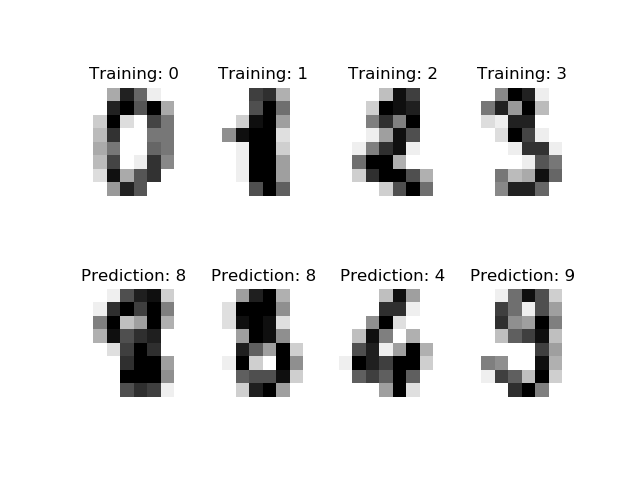
The confusion matrix is given below and shows for example that a true “3” is often mistaken as a “8” (see red circle)

print(__doc__)
# Author: Gael Varoquaux <gael dot varoquaux at normalesup dot org>
# License: BSD 3 clause
# Standard scientific Python imports
import matplotlib.pyplot as plt
# Import datasets, classifiers and performance metrics
from sklearn import datasets, svm, metrics
from sklearn.model_selection import train_test_split
# The digits dataset
digits = datasets.load_digits()
# The data that we are interested in is made of 8x8 images of digits, let's
# have a look at the first 4 images, stored in the `images` attribute of the
# dataset. If we were working from image files, we could load them using
# matplotlib.pyplot.imread. Note that each image must have the same size. For these
# images, we know which digit they represent: it is given in the 'target' of
# the dataset.
_, axes = plt.subplots(2, 4)
images_and_labels = list(zip(digits.images, digits.target))
for ax, (image, label) in zip(axes[0, :], images_and_labels[:4]):
ax.set_axis_off()
ax.imshow(image, cmap=plt.cm.gray_r, interpolation='nearest')
ax.set_title('Training: %i' % label)
# To apply a classifier on this data, we need to flatten the image, to
# turn the data in a (samples, feature) matrix:
n_samples = len(digits.images)
data = digits.images.reshape((n_samples, -1))
# Create a classifier: a support vector classifier
classifier = svm.SVC(gamma=0.001)
# Split data into train and test subsets
X_train, X_test, y_train, y_test = train_test_split(
data, digits.target, test_size=0.5, shuffle=False)
# We learn the digits on the first half of the digits
classifier.fit(X_train, y_train)
# Now predict the value of the digit on the second half:
predicted = classifier.predict(X_test)
images_and_predictions = list(zip(digits.images[n_samples // 2:], predicted))
for ax, (image, prediction) in zip(axes[1, :], images_and_predictions[:4]):
ax.set_axis_off()
ax.imshow(image, cmap=plt.cm.gray_r, interpolation='nearest')
ax.set_title('Prediction: %i' % prediction)
print("Classification report for classifier %s:\n%s\n"
% (classifier, metrics.classification_report(y_test, predicted)))
disp = metrics.plot_confusion_matrix(classifier, X_test, y_test)
disp.figure_.suptitle("Confusion Matrix")
print("Confusion matrix:\n%s" % disp.confusion_matrix)
plt.show()7.5 Neural networks
non linear
activation
softmax types of layers siehe keras fully connected
7.5.1 Convolutional Neural Network (CNN) TBD
A Convolutional Neural Network is an neural network are mainly used to analyze image and audio data.
The following explanation is based on The learning machine tutorial “Classification Convolutional Neural Network (CNN)” https://www.thelearningmachine.ai/cnn
A classical CNN consists of
- one or more convolutoional layers
- one or more pooling layers
- one or more fully connected layers
A classical CNN is depicted in the image below

Figure from https://www.thelearningmachine.ai/cnn
An image is an 3 dimensional array where the third dimension are for the colors red, green and blue, in case of an RGB image. An image can therefore be represented as shown below

Figure from https://www.thelearningmachine.ai/cnn
To analyze an image the spatial relation between different pixels hold important information. Therefore it is beneficial to use an algorithm which looks not only at one pixel but also at the neighbouring pixels. One way of doing so is to slide an 2 dimensional array over the image array as can be seen below

Figure from https://www.thelearningmachine.ai/cnn
The 2 dimensional array is called a kernel and is named depending on its dimensions. The kernel in the graph below is a “3 by 3 kernel”. Sliding the array across the image as gives a set of numbers as shown above. Those kernels can detect structures in images such as
- lines
- boxes
- circles
and kernels in later layers in the CNN can detect more complex structures such as
- faces
- wheels
- trees
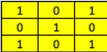
Figure from https://www.thelearningmachine.ai/cnn
A kernel has the same depth of the input, in a case of an RGB image, the depth of the kernel is 3. The output of the kernels is added, for each of the positions of the kernels there is one value at the output.
The movement across the image is based on the stride parameters for x and y direction. In the case below the stride is as follows
- stride x-direction = 1
- stride y-direction = 1
Depending on stride with and image dimension it might be necessary to apply padding, for details on padding see deepAi
Figure from https://www.thelearningmachine.ai/cnn
7.5.1.1 Pooling layer
The pooling layer reduces the dimension as shown below. There are different types of pooling layers
- max
- average
below the working mechanism for a max pooling layer is shown. The stride for x and y is one, the dimension of the 5 by 5 input is reduced to 3 by 3
Figure from https://www.thelearningmachine.ai/cnn
After one or more combination of convolutional and pooling layers one or more fully connected layers learn how to classify the image based on non-linear combinations of the high-level features learned by the previous layers. The fully connected layer with the soft-max activation at the end gives the probability of each category, often as a result the three to five classes with the highest probability are reported.
- convolutional and pooling layers => high-level features
- fully connected layers => combine non-linear high level features for classification

Figure from https://www.thelearningmachine.ai/cnn
The operating principle of a CNN is shown below

7.5.2 RNN TBD
7.5.3 GANs
GANs from Scratch 1: A deep introduction. With code in PyTorch and TensorFlow

credit of the image (Zhu et al. 2017)
Generative models learn the intrinsic distribution function of the input data p(x) (or p(x,y) if there are multiple targets/classes in the dataset), allowing them to generate both synthetic inputs x’ and outputs/targets y’, typically given some hidden parameters.
GANs they have proven to be really succesfull in modeling and generating high dimensional data, which is why they’ve become so popular. Nevertheless they are not the only types of Generative Models, others include Variational Autoencoders (VAEs) and pixelCNN/pixelRNN and real NVP. Each model has its own tradeoffs.
Some of the most relevant GAN pros and cons for the are:
They currently generate the sharpest images
They are easy to train (since no statistical inference is required), and only back-propogation is needed to obtain gradients
GANs are difficult to optimize due to unstable training dynamics.
No statistical inference can be done with them (except here): GANs belong to the class of direct implicit density models; they model p(x) without explicitly defining the p.d.f.
A neural network G(z, θ₁)
Jupyter notebook on github https://github.com/diegoalejogm/gans/blob/master/1.%20Vanilla%20GAN%20PyTorch.ipynb
7.6 A Gentle Introduction to CycleGAN for Image Translation
https://machinelearningmastery.com/what-is-cyclegan/
7.6.1 Examples for GANs
7.6.1.1 gans-awesome-applications
a list of plenty of applications can be found at https://github.com/nashory/gans-awesome-applications
7.7 Software that can generate photos from paintings, turn horses into zebras, perform style transfer, and more.
with software to do style transfer https://github.com/junyanz/CycleGAN ### Pix2pix framework
Jupyter notebook for Colab https://github.com/junyanz/pytorch-CycleGAN-and-pix2pix/blob/master/pix2pix.ipynb

7.8 Transformers TBD
Attention Is All You Need https://arxiv.org/abs/1706.03762
Visualizing A Neural Machine Translation Model (Mechanics of Seq2seq Models With Attention)
Chapter 8 Food for the algorithms: Data
8.1 Discovering millions of datasets on the web
Published Jan 23, 2020 by Google Across the web, there are millions of datasets about nearly any subject that interests you. If you’re looking to buy a puppy, you could find datasets compiling complaints of puppy buyers or studies on puppy cognition. Or if you like skiing, you could find data on revenue of ski resorts or injury rates and participation numbers. Dataset Search has indexed almost 25 million of these datasets, giving you a single place to search for datasets and find links to where the data is. Over the past year, people have tried it out and provided feedback, and now Dataset Search is officially out of beta.
https://blog.google/products/search/discovering-millions-datasets-web/
Chapter 9 Explainable ML tbd
adfdasf
9.1 Lime tbd
First paper on LIME was (Tulio Ribeiro, Singh, and Guestrin 2016)
9.2 alibi tbd
https://github.com/SeldonIO/alibi
https://docs.seldon.io/projects/alibi/en/stable/overview/algorithms.html
9.3 tf-explain tbd
9.4 keras-salient-object-visualization
Keras implementation of nvidia paper ‘Explaining How a Deep Neural Network Trained with End-to-End Learning Steers a Car’. The goal of the visualization is to explain what Donkey Car (https://github.com/wroscoe/donkey) learns and how it makes its decisions. The central idea in discerning the salient objects is finding parts of the image that correspond to locations where the feature maps of CNN layers have the greatest activations.
Original paper: https://arxiv.org/pdf/1704.07911.pdf https://arxiv.org/abs/1704.07911
9.4.1 Explaining How a Deep Neural Network Trained with End-to-End Learning Steers a Car
(Bojarski et al. 2017)
- Enable further system improvement
- Create trust that the system is paying attention to the essential cues
9.4.2 VisualBackProp: efficient visualization of CNNs
(Bojarski et al. 2016)
Chapter 10 ML online resources
10.1 In-depth introduction to machine learning in 15 hours of expert videos
https://www.r-bloggers.com/in-depth-introduction-to-machine-learning-in-15-hours-of-expert-videos/
10.1.1 An Introduction to Statistical Learning
This book provides an introduction to statistical learning methods.
http://faculty.marshall.usc.edu/gareth-james/ISL/
10.2 The learning machine
https://www.thelearningmachine.ai
WELCOME TO TLM TLM is a new open-source project that aims to create an interactive textbook containing A-Z explanations of concepts and methods, algorithms and their code implementations from the fields of data science, machine learning, deep learning, natural language processing, statistics, and more.
10.3 DeepAI: The front page of A.I.
The most popular research, guides, news and more in artificial intelligence
Chapter 11 Examples in Kaggle
Kaggle is a platform for data scientists and machine learning practitioners which allows users to:
- find datasets
- publish datasets
- exlplore models on web-based data-science environment in
- Python
- R
- SQLite
- Julia
- work with other machine learning practitioners on competitions
- 379 (Feb 2020)
- Host competitions
- engage in discussions
- find jobs
Same facts about Kaggle
- Founded April 2010
- Headquarter in San Francisco
- More than 1 million member since March 2017
Kinds of competitions
- Featured
- generally commercially-purposed prediction problems
- with up to $1.5 mio price money
- 177 (Feb 2020)
- 2 active
- good opportunity to learn from the best
- Research
- more experimental than featured competition problems
- with up to $50,000 price money
- 94 (Feb 2020)
- 2 active
- Recruitment
- corporation-curated challenges
- teams of size one
- with up to $20,000 price money
- 17 (Feb 2020)
- 0 active
- interested participants can upload their resume for consideration by the host
- price: job interview
- Getting started
- easiest, most approachable competitions
- getting the foot in the door
- 11 (Feb 2020)
- 4 active
- Playground
- one step above Getting Started in difficulty
- with up to $30,000 price money
- 60 (Feb 2020)
- 2 active
- Masters
- limited participation
- only by invitation
- with up to $125,000 price money
- 6 (Feb 2020)
- 0 activeMore details on how competitions are conducted can be found at https://www.kaggle.com/docs/competitions
Chapter 12 Melbourne University AES/MathWorks/NIH Seizure Prediction
The competition was hosted in 2016 by at https://www.kaggle.com/c/melbourne-university-seizure-prediction and was subtitled “Predict seizures in long-term human intracranial EEG recordings”
The price money was $20,000, the competition ended 24.11.2016 and 478 teams had submitted a solution.

The competition was sponsored by:
- MathWorks
- National Institutes of Health (NINDS)
- American Epilepsy Society
- University of Melbourne
and organized in partnership with:
- Alliance for Epilepsy Research
- University of Pennsylvania
- Mayo Clinic.
Challenge:
- Predict seizures 1h before they occur
- Data
- Ten minutes intracranial EEG (iEEG) clips
- Benefits
- Seizure forecasting systems have the potential to help patients with epilepsy lead more normal lives.
The metric was area under the ROC curve between the predicted probability and the observed target.
The best possible score for perfect predictions is 1. The leader board look as follows:
Leaderboard:

- 0.80701
- 0.79898
- 0.79652
The winning solution is described in the next chapter
12.1 Winning solution (1st)
The first placed team was a two man show, they present their solution at Kaggle discussion
The team consisted of:
- Four ML experts
- Private team
The team members build a total of 11 models which were blended by using an average of ranked predictions of each individual model. The weight of all models was 1.
Models:
- 11 models in total
- Each weighted 1
12.1.1 Alex / Gilberto models
The two created 4 models which were selected for the final ensemble
12.1.1.1 Pre-processing
For all models of Alex and Gilberto the pre-processing was the same. The code can be found at GitHub
Pre-processing: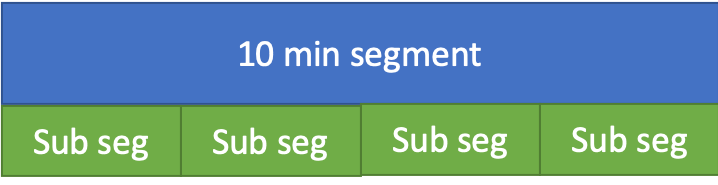
- Segmentation of 10min segments into
- non-overlapping
- 30 20s segments
- No filtering
12.1.1.2 Software
The team used Python and several libraries
Software:
- Python
- scikit-learn
- pyRiemann
- xgboost
- mne-python
- pandas
- pyyaml
12.1.1.3 Model 1
The feature generation code is given at GitHub
Model 1 used XGB algorithm and 96 features
96 features:
- normalized log power
- 6 different frequency band (0.1 - 4 ; 4- 8 ; 8 - 15 ; 15 - 30 ; 30 - 90 ; 90 - 170 Hz)
- for each channel
- Power spectral density
- Welch’s method (window of 512 sample, 25% overlap)
- averaged in each band
- normalized by the total power
- taking logarithm.
12.1.1.4 Model 2
Model 2 used XGB algorithm and 336 features
336 features:
- relative log power as described above -with the addition of various measures -mean - min - max - variance - 90th - 10th percentiles)
- auto regressive error coefficient (order 5)
- fractal dimension
- Petrosian
- Higuchi
- Hurst exponent
12.1.1.5 Model 3
Model 3 used XGB algorithm and 576 features Each of the autocorrelation matrices were projected into their respective riemannian tangent space (see (Barachant et al. 2013), this operation can be seen as a kernel operation that unfold the natural structure of symmetric and positive define matrices) and vectorized to produce a single feature vector of 36 item.
576 features:
- auto-correlation matrix
- projected into their respective riemannian tangent space
- kernel operation that unfold the natural structure of symmetric and positive define matrices
- projected into their respective riemannian tangent space
12.1.1.6 Model 4
Model 4 used XGB algorithm and 336 features This feature set is composed by cross-frequency coherence (in the same 6 sub-band as in the relative log power features) of each channels, i.e. the estimation of coherence is achieved between pairs of frequency of the same channel instead to be between pairs of channels for each frequency band. This produce set of 6x6 coherence matrices, that are then projected in their tangent space and vectorized.
336 features:
- cross-frequency coherence
- projected in their tangent space and vectorized
12.1.2 Feng models
Feng created 4 models which were selected for the final ensemble. Total training time (including feature extraction) is estimated to less than 6 hours for these 4 models on my 8 GB RAM MacBook Pro.
12.1.2.1 Pre-processing
The pre-processing was the same for all models
Pre-processing:
- Butterworth filter (5th order with 0.1-180 HZ cutoff )
- segmentation of 10min
-non-overlapping
- 30s windows
12.1.2.2 Features
Two different sets of features were produced and used in different combinations for the models. The script to generate the features can be found at GitHub
The parameters of the feature generation is organized in the json file kaggle_SETTINGS.json
Feature set 1:
- bands: (0.1–4 Hz), theta (4–8 Hz), alpha (8–12 Hz), beta (12–30 Hz), low gamma (30–70 Hz) and high gamma (70–180Hz)
- standard deviation
- average spectral power
Feature set 2:
- correlation
- time domain
- frequency domain
- upper triangle values of correlation matrices
- eigenvalues
12.1.2.3 Models
The models used different algorithms and either feature set 1 or both feature sets
Model 1: XGB with feature 1
Model 2: KNN with feature1
Model 3: KNN with feature1+feature2
Model 4: Logistic Regression with L2 penalty with feature1+feature2
12.1.3 Andriy models
Andriy created 3 models which were selected for the final ensemble
12.1.3.1 Pre-processing
For all models of Andriy the pre-processing was the same
Pre-processing:
- demeaning the EEG signal
- filtering of the EEG signal between 0.5 and 128 Hz with a notch filter set at 60Hz
- downsampling to 256 Hz
- segmentation of the 10 minutes segment
- non-overlapping
- 30 seconds segment.
12.1.3.2 Features
Andriy created 1965 features from which he choose by computing the feature importance using an XGB classifier.
The univarant features have been previously used in several EEG applications, including seizure detection in newborns and adults (Temko, Thomas, Marnane, Lightbody, and Boylan 2011a) and (Temko, Thomas, Marnane, Lightbody, and Boylan 2011b)
per-channel feature (univariate):
- 111 feature per channel => 11*16 = 1776
- peak frequency of spectrum
- spectral edge frequency (80%, 90%, 95%)
- fine spectral log-filterbank energies in 2Hz width sub-bands (0-2Hz, 1-3Hz, …30-32Hz)
- coarse log filterbank energies in delta, theta, alpha, beta, gamma frequency bands
- normalised FBE in those sub-bands
- wavelet energy
- curve length
- Number of maxima and minima
- RMS amplitude
- Hjorth parameters
- Zero crossings (raw epoch, Δ, ΔΔ)
- Skewness
- Kurtosis
- Nonlinear energy
- Variance (Δ, ΔΔ)
- Mean frequency
- band-width
- Shannon entropy
- Singular value decomposition entropy
- Fisher information
- Spectral entropy
- Autoregressive modelling error (model order 1-9)These multivariate were extracted for the five conventional EEG sub-bands (delta, theta, alpha, beta, gamma) for 6 different montages (horizontal, vertical, diagonal, etc
cross-channel features (multivariate):
- 180 features
- lag of maximum cross correlation
- correlation
- brain asymmetry index
- brain synchrony index
- coherence
- frequency of maximum coherence.
12.1.3.3 Models
Out of the 1965 features listed above the first model computed the feature importance which was then used to select features for model 2 and 3
Model 1: All features were used in a bagged XGB classifier (XGB).
Model 2: Linear SVM was trained with top 300 features (SVM)
Model 3: GLM was trained with top 200 features (Glmnet)
12.1.4 Code on GitHub
A detailed explanation of solution and code is given at GitHub
12.1.4.1 Alex / Gilberto code
The code of Alex / Gilberto is analyzed below
12.1.4.1.1 Pre-processing
For all models of Alex and Gilberto the pre-processing was the same. The code can be found at GitHub
12.1.4.1.2 Feature generation
The feature generation code is given at GitHub
12.1.4.1.3 Models
They use the XGB algorithm, the XGB hyperparameters are set in .yml files as follows

Yaml file:
output: Alex_Gilberto_autocorrmat_TS_XGB
datasets:
- autocorrmat
n_jobs: 1
safe_old: True
imports:
models:
- CoherenceToTangent
xgboost:
- XGBClassifier
sklearn.ensemble:
- BaggingClassifier
model:
- CoherenceToTangent:
tsupdate: False
metric: '"identity"'
n_jobs: 8
- BaggingClassifier:
max_samples: 0.99
max_features: 0.99
random_state: 666
n_estimators: 4
base_estimator: XGBClassifier(n_estimators=500, learning_rate=0.01, max_depth=4, subsample=0.50, colsample_bytree=0.50, colsample_bylevel=1.00, min_child_weight=2, seed=42)The models were than called within a shell script:
12.1.4.2 Feng code
The code of Feng is analyzed below
12.1.4.2.1 Pre-processing
The scripts for pre-processing are given at GitHub
12.1.4.2.2 Features
The script to generate the features can be found at GitHub
The parameters of the feature generation is organized in the json file kaggle_SETTINGS.json
12.1.4.2.3 Models
The code for the GLM model:
def train(subject, data_path, plot=False):
d = load_train_data_lasso(data_path, subject)
x, y = d['x'], d['y']
print 'n_preictal', np.sum(y)
print 'n_inetrictal', np.sum(1-y)
n_channels = x.shape[1]
n_fbins = x.shape[2]
x, y = reshape_data(x, y)
x[np.isneginf(x)] = 0
data_scaler = StandardScaler()
x = data_scaler.fit_transform(x) ## Normalizaiton
logreg = linear_model.LogisticRegression(penalty='l2',C=0.6)
logreg.fit(x, y)
return logreg, data_scalerThe code for the KNN model:
def train(subject,data_path):
d=load_train_data_knn(data_path,subject)
x,y=reshape_data(d['x'],d['y'])
x[np.isneginf(x)] = 0
x[np.isnan(x)]=0
data_scaler = StandardScaler()
x = data_scaler.fit_transform(x)
clf = KNeighborsClassifier(n_neighbors=40, weights='distance',metric='manhattan', n_jobs=-1)
clf.fit(x, y)
return clfThe code for the XGB model:
params = {
"objective": "binary:logistic",
"booster" : "gbtree",
"eval_metric": "auc",
"eta": 0.22,##0.22
"max_depth": 3,
"subsample": 0.80,
"colsample_bytree": 0.78,
"silent": 1,
}
def train(subject,data_path,params):
d=load_train_data_xgb(data_path,subject)
x,y=reshape_data(d['x'],d['y'])
dtrain=xgb.DMatrix(x,y)
gbm=xgb.train(params,dtrain,num_boost_round=500,verbose_eval=20)
return gbm
12.1.4.3 Andriy code
The code of Andriy is analyzed below
12.1.4.3.1 Pre-processing
Pre-processing is done in Matlab scripts on GitHub
12.1.4.3.2 Feature generation
The feature generation is also done in 4 Matlab scripts at GitHub
- FE_main_AR.m
- FE_main_CONN.m
- FE_main_CSP_AR.m
- FE_main_F.m
12.1.4.3.3 Models
The files for the models are:
-GLM model - mod_glmnet_5_3.R
Creates SVM model and submission
-SVM model -mod_svm_5_7.R
-XGB model - mod_xgb_7_5.R
Code for the XGB model
param <- list( objective = "binary:logistic",
booster = "gbtree",
eval_metric = "auc",
eta = 0.3,
max_depth = 3,
subsample = 0.8,
colsample_bytree = 1,
num_parallel_tree = 2
)
cat('model1...')
set.seed(1234)
model1 <- xgb.train( params = param,
data = dtrain,
nrounds = 1000)
importance <- xgb.importance(model = model1)
12.2 Solution(4th place)
The 4th placed team was a one man show, he presented his solution at Kaggle discussion The solution got a AUC of 0.79457 compared to the winning solution of 0.80701
12.2.1 Pre-processing
Pre-processing: - Splitting into 75s windows - Resampled to 100Hz
12.2.2 Features
Features:
- Divide frequency spectrum
- 50 bands
- 0.67 - 46.67Hz
- take power of bands
- correlation matrix between channels
- eingenvalues of correlation matrix
- Divide frequency spectrum
- 5 bands delta (0.1-4Hz), theta (4-8Hz), alpha (8-12Hz), beta (12-30Hz), low-gamma (30-50Hz)
- take power of bands
- entropy of bands
- original signal
- correlation matrix
- eigenvalues
- square all above features as additionals features
12.2.3 Model
A single XGB model was used
12.2.4 GitHub code
The code is hosted on GitHub
Chapter 13 Bosch Production Line Performance
This competition was hosted in 2016 by Bosch at https://www.kaggle.com/c/bosch-production-line-performance and was subtitled “Reduce manufacturing failures”
The price money was $30,000, the competition ended 11.11.2016 and 1373 teams had submitted a solution.
Challenge:
- Predict internal failures
- Data anonymized
- measurements
- tests
- measurements
- Benefit
- reduce manufacturing failures
The metric was Matthews correlation coefficient (MCC) between the predicted and the observed response. The MCC is given by:
\[MCC = score=\frac{\left(TP*TN\right) - \left(FP*FN\right) }{\sqrt{\left(TP*FP\right) \left(TP*FN\right) \left(TN*FP\right) \left(TN*FN\right)}} \] where:
- TP: number of true postive
- FP: number of false positive
- TN: number of true negative
- FN: number of false negative
The best possible score for perfect predictions is 1. The leader board look as follows:
- 0.52401
- 0.51847
- 0.51621
The winning solution is described in the next chapter
13.1 1st place solution
The first placed team was a two man show, they present their solution at Kaggle discussion
The team consisted of
- Two ML experts
- Private team
13.1.1 Data exploration
Two weeks were invested to explore the data regarding:
- Statistics
- Correlation
13.1.2 Hand crafted features
The team created their own features
Time features are:
- StartStationTimes
- StartTime, EndTime, Duration
- StationTimeDiff
- Start/End part of week (mod 1680)
- Number of records in next/last 2.5h, 24h, 168h for each station
- Number of records in the same time (6 mins)
- MeanTimeDiff since last 1/5/10 failure(s)
- MeanTimeDiff till next 1/5/10 failure(s)
Numeric features are:
Raw numeric features (most of the time we used the raw numeric features or simple subsets based on xgb feature importance)
Z-scaled features for each week
Count encoding for each value
Feature combinations (f1 + - * f2)
13.1.3 Hardware
Since there was no usage of NN the hardware cold be rather modest
- Desktop machine (16GB RAM)
13.3 8th place solution with GitHub
The eighth placed team was a team of eighth, they present their solution at Kaggle discussion
The team consisted of
- Eigth people
- Private group
- Organised via the net
13.3.1 Overall architecture
A variety of model were combined
- LightGBM (gbm)
- xgboost (xgb)
- Random Forest (rf)
- Neural Networks (didn’t get picked up on level 2, so they were removed)
13.3.2 Input data sets
The team created different data sets and used them with different models
Level 1 data set:
- Data set 1 (0.477 gbm): order, raw numeric, date, categorical
- Data set 2 (0.482 gbm, 0.477 xgb, 0.473 rf): order, path, raw numeric, date
- Data set 3 (0.479 gbm, 0.473 xgb): order, path, numeric, date, refined categorical
- Data set 4 (0.469 xgb, 0.442 rf): has features sorted by numeric values + date features + path, unsupervised nearest neighbors (L1 = Manhattan / L2 = Euclidean distances) per label
- Data set 5 (0.43 xgb): path, unsupervised nearest neighbors
The model was two staged, the second stage was as given below
Level 2 data set:
- Level 1 predictions (we had 12 predictions from level 1)
- Data set 5
- Duplicate feature (count and position)
13.3.3 Ensembling
Often a better performance can be achieved when ensembling several model together, good practice is it to use models which a dissimilar because the variance helps to improve the overall performance.
- 30% weighted xgboost gbtree (~0.488 CV)
- 70% weighted Random Forest (~0.485 CV)
13.3.4 Features
13.3.4.1 Features used
Features were created using several methods
- Maximum
- Minimum
- Kurtosis
- Lead
- Lag
- One-hot encoded
13.3.5 Validation method
The validation method used was 5-fold cross validation
13.3.6 Software
The team used a variety of programming languages and tools
- Programming language
- R
- Python
- Tools
- LightGBM through Laurae package
- xgboost
- Random Forest scikit-learn
- H2O Random Forest
- Keras Neural Networks
- Markdown
- Rmarkdown
- RStudio for R,
- Spyder for Python
13.3.7 Code on GitHub
A detailed explanation of the code is given on GitHub
The scripts for:
- Pre-processing
- Feature engineering
- Modeling scripts
- Hyperparameter optimization using HyperOpt
13.3.7.1 Level 1 model scripts
Lets look into some of the model scripts
13.3.7.1.1 GBM Model
temp_model <- lgbm.cv(y_train = label,
x_train = train,
x_test = test,
data_has_label = TRUE,
NA_value = "nan",
lgbm_path = my_lgbm_is_at,
workingdir = my_script_is_using,
files_exist = TRUE,
save_binary = FALSE,
validation = TRUE,
folds = folds,
predictions = TRUE,
importance = TRUE,
full_quiet = FALSE,
verbose = FALSE,
num_threads = threads, # The number of threads to run for LightGBM.
application = "binary",
learning_rate = eta, # The shrinkage rate applied to each iteration
num_iterations = 5000, # The number of boosting iterations
early_stopping_rounds = 700, # The number of boosting iterations whose validation metric is lower than the best is required for LightGBM to automatically stop
num_leaves = leaves, # The number of leaves in one tree
min_data_in_leaf = min_sample, # Minimum number of data in one leaf
min_sum_hessian_in_leaf = min_hess, # Minimum sum of hessians in one leaf to allow a split
max_bin = 255, # The maximum number of bins created per feature
feature_fraction = colsample, # Column subsampling percentage. For instance, 0.5 means selecting 50% of features randomly for each iteration
bagging_fraction = subsample, # Row subsampling percentage. For instance, 0.5 means selecting 50% of rows randomly for each iteration.
bagging_freq = sampling_freq, # The frequency of row subsampling
is_unbalance = FALSE, # For binary classification, setting this to TRUE might be useful when the training data is unbalanced
metric = "auc",
is_training_metric = TRUE, # Whether to report the training metric in addition to the validation metric
is_sparse = FALSE) # Whether sparse optimization is enabled
13.3.7.1.2 XGBoost model
temp_model <- xgb.train(data = dtrain,
nthread = 12,
nrounds = floor(best_iter * 1.1), # max number of boosting iterations.
eta = 0.05, # control the learning rate: scale the contribution of each tree by a factor of 0 < eta < 1 when it is added to the current approximation
depth = 7, # maximum depth of a tree
#gamma = 20, # minimum loss reduction required to make a further partition on a leaf node of the tree.
subsample = 0.9, # Setting it to 0.5 means that xgboost randomly collected half of the data instances to grow trees
colsample_bytree = 0.7, # subsample ratio of columns when constructing each tree
min_child_weight = 50, # minimum sum of instance weight (hessian) needed in a child
booster = "gbtree", # which booster to use, can be gbtree or gblinear
#feval = mcc_eval_nofail,
eval_metric = "auc",
maximize = TRUE,
objective = "binary:logistic",
verbose = TRUE,
prediction = TRUE,
watchlist = list(test = dtrain))
13.3.7.2 Level 2 model scripts
13.3.7.2.1 70% weighted Random Forest (~0.485 CV)
First read in the results of level 1 models which are now the features for the level 2 model
train <- read_feather("Shubin/retrain_material/train.feather")
test <- read_feather("Shubin/retrain_material/test.feather")
train[, "xgb_jay_joost_v2"] <- fread("Laurae/20161110_xgb_jayjoost_fix2/aaa_stacker_preds_train_headerY_scale.csv")$x
test[, "xgb_jay_joost_v2"] <- fread("Laurae/20161110_xgb_jayjoost_fix2/aaa_stacker_preds_test_headerY_scale.csv")$x
train[, "gbm_jay_joost_v2"] <- fread("Laurae/20161111_lgbm_jayjoost/aaa_stacker_preds_train_headerY_scale.csv")$x
test[, "gbm_jay_joost_v2"] <- fread("Laurae/20161111_lgbm_jayjoost/aaa_stacker_preds_test_headerY_scale.csv")$x
train[, "gbm_jay"] <- fread("Laurae/20161111_lgbm_jay/aaa_stacker_preds_train_headerY_scale.csv")$x
test[, "gbm_jay"] <- fread("Laurae/20161111_lgbm_jay/aaa_stacker_preds_test_headerY_scale.csv")$x
train[, "gbm_mike"] <- fread("Laurae/20161110_lgbm_mike/aaa_stacker_preds_train_headerY_scale.csv")$x
test[, "gbm_mike"] <- fread("Laurae/20161110_lgbm_mike/aaa_stacker_preds_test_headerY_scale.csv")$x
train[, "xgb_mike"] <- fread("Laurae/20161110_xgb_mike/aaa_stacker_preds_train_headerY_scale.csv")$x
test[, "xgb_mike"] <- fread("Laurae/20161110_xgb_mike/aaa_stacker_preds_test_headerY_scale.csv")$xthen train the level 2 model
13.3.7.2.2 Hyperparameter optimization using HyperOpt
The models have been implemented in R, the hyperparameter optimizsation is implemented in Python.
Define parameters to be optimized
# Random Forest Params
params = {'n_estimators': 100}
params['random_state'] = 100
params['max_features'] = hp.choice('max_features', range(10, 199))
params['max_depth'] = hp.choice('max_depth', range(7,30))
params['verbose'] = 10
params['n_jobs'] = -1
Run optimizer from the library Hyperopt
# Hyperopt
trials = Trials()
counter = 0
best = fmin(score_rf,
params,
algo=tpe.suggest, # search algorithm
max_evals=200,
trials=trials)choosing the trials option gives back a dictionary with
- trials.trials - a list of dictionaries representing everything about the search
- trials.results - a list of dictionaries returned by ‘objective’ during the search
- trials.losses() - a list of losses (float for each ‘ok’ trial)
- trials.statuses() - a list of status strings
Chapter 14 Corporación Favorita Grocery Sales Forecasting
https://www.kaggle.com/c/favorita-grocery-sales-forecasting
14.1 1st place solution
The first place solution is described at Kaggle discussion
14.2 4th-Place Solution Overview
A similar code used in a different competition was shared on GitHub
Chapter 15 Severstal: Steel Defect Detection
https://www.kaggle.com/c/severstal-steel-defect-detection
Chapter 16 Lyft 3D Object Detection for Autonomous Vehicles
https://www.kaggle.com/c/3d-object-detection-for-autonomous-vehicles
Chapter 17 APTOS 2019 Blindness Detection
https://www.kaggle.com/c/aptos2019-blindness-detection
17.1 1st place solution summary
https://www.kaggle.com/c/aptos2019-blindness-detection/discussion/108065#latest-673088
Chapter 18 Predicting Molecular Properties
The competition was hosted by a group of UK universities as a featured competition at https://www.kaggle.com/c/champs-scalar-coupling and was subtitled “Can you measure the magnetic interactions between a pair of atoms?”
- Hosts:
- CHemistry and Mathematics in Phase Space (CHAMPS) University of Bristol
- Cardiff University
- Imperial College
- University of Leeds
The price money was $30,000, the competition ended 21.08.2019 and 2,749 teams had submitted a solution.
- Challenge
- Develop algorithm that can predict the magnetic interaction between two atoms in a molecule
- Data
- dipole moments
- magnetic shielding tensor
- mulliken charge
- potential energy
- Benefit
- designing molecules to carry out specific cellular tasks
- designing better drug molecules
The metric was Log of the Mean Absolute Error (MAE), calculated for each scalar coupling type, and then averaged across types, so that a 1% decrease in MAE for one type provides the same improvement in score as a 1% decrease for another type.
\[Log MAE = score=\frac{1}{T} \sum_{t=1}^{T} \log \left(\frac{1}{n_{t}} \sum_{i=1}^{n_{t}}\left|y_{i}-\hat{y}_{i}\right|\right)\]
Where:- \(T\) is the number of scalar coupling types
- \(n_t\): is the number of observations of type \(t\)
- \(y_i\): is the actual scalar coupling constant for the observation
- \(\hat{y}_{i}\) is the predicted scalar coupling constant for the observation
The best possible score for perfect predictions is approximately -20.7232. The leader board look as follows:
- -3.23968
- -3.22349
- -3.19498
The winning solution is described in the next chapter
18.1 #1 Solution - hybrid
The winning team was from Bosch Research, they present their solution at Kaggle discussion
The team consisted of
- Two Bosch research groups
- Bosch Corporate Research
- Bosch Center for AI (BCAI, Pittsburgh)
- Domain experts
- ML experts
18.1.1 Overall architecture
The winning team used a neural network
- Wrote NN model from scratch
- Model processes an entire molecule at once
- simultaneously making a prediction for each of the scalar couplings in the molecule
18.1.1 Input features and embeddings
- Embeddings
- Plus two scalar constants
18.1.2 Ensembling
Often a better performance can be achieved when ensembling several model together, good practice is it to use models which a dissimilar because the variance helps to improve the overall performance.
- Trained 13 models
- iterations and versions of same basic structure
- Best single model: -3.08
- Straight median across predictions: ~-3.22
- More involved blending: -3.24517
18.1.3 Hardware
The variety of models were trained on different machines, each running a Linux OS:
- 5 machines had 4 GPUs, each a NVIDIA GeForce RTX 2080 Ti
- 2 machines had 1 GPU NVIDIA Tesla V100 with 32 GB memory
- 6 machines had 1 GPU NVIDIA Tesla V100 with 16 GB memory
18.1.4 Software
The team did not use any of the popular ML frameworks but coded their models from scratch
- Python 3.5+
- PyTorch
- CUDA 10.1
- NVIDIA APEX (Only available through the repo at this phase)
18.1.5 Code on GitHub
A detailed explanation of the principle setup of the code for pre-processing and for the models is given at https://github.com/boschresearch/BCAI_kaggle_CHAMPS
18.2 #2 solution ü§ñ Quantum Uncertainty ü§ñ
The second placed team was a two man show, they present their solution at Kaggle discussion
The team consisted of
- No domain experts
- ML experts
- Private team
18.2.1 Overall architecture
Since the team had no domain knowledge and “obviously we were at a disadvantage if we tried to become quantum experts in 1 month” they needed the model to build the features.
- Deep learning
- Dimension 512 to 2048
- Layers 6 to 24
- Parameters from ~12M to ~100M
- Letting the model build the features
18.2.2 Input features and embeddings
- Three input arrays of dimension 29 (maximum number of atoms)
- x,y,z position of each atom
- atom type index (C=0, H=1, etc…)
- j-coupling type index (1JHC=0,’2JHH=1,etc.)
- No manually engineered features
18.2.3 Data augmentation
Data augmentation helps to increase the data basis by producing new samples. Depending on how the augmentation is done it can also be a way of making the model more robust to disturbance, e.g. createing artificially shadow in images makes model less susceptible to lightning conditions
- Rotations (though not used in final model)
- J-coupling symmetriy as described here
18.2.4 Ensembling
Often a better performance can be achieved when ensembling several model together, good practice is it to use models which a dissimilar because the variance helps to improve the overall performance.
- Trained 14 models
- iterations and versions of same basic structure
- Best single model: -3.16234
18.2.5 Hardware
On permise as well as rented hardware was used by the team.
- 3 x 2080 Ti + 128 Gb RAM + 16c32t processor
- 2 x 1080 Ti + 64 Gb RAM + 8c16t processor
- Rented 8+ 2080 Ti + 64 Gb RAM + 16c32t processor (multiple machines rented as needed)
18.2.6 Software
The team did not use any of the popular ML frameworks but coded their models from scratch
- PyTorch
- FastAi
18.2.7 Code on GitHub
The code is shared at https://github.com/antorsae/champs-scalar-coupling. The jupyter notebook using FastAi is at https://github.com/antorsae/champs-scalar-coupling/blob/master/atom-transfomer.ipynb
In the “Model” section the transformer is defined as follows:
class AtomTransformer(Module):
def __init__(self,n_layers,n_heads,d_model,embed_p:float=0,final_p:float=0,d_head=None,deep_decoder=False,
dense_out=False, **kwargs):
self.d_model = d_model
d_head = ifnone(d_head, d_model//n_heads)
self.transformer = Transformer(n_layers=n_layers,n_heads=n_heads,d_model=d_model,d_head=d_head,
final_p=final_p,dense_out=dense_out,**kwargs)
channels_out = d_model*n_layers if dense_out else d_model
channels_out_scalar = channels_out + n_types + 1
if deep_decoder:
sl = [int(channels_out_scalar/(2**d)) for d in range(int(math.ceil(np.log2(channels_out_scalar/4)-1)))]
self.scalar = nn.Sequential(*(list(itertools.chain.from_iterable(
[[nn.Conv1d(sl[i],sl[i+1],1),nn.ReLU(),nn.BatchNorm1d(sl[i+1])] for i in range(len(sl)-1)])) +
[nn.Conv1d(sl[-1], 4, 1)]))
else:
self.scalar = nn.Conv1d(channels_out_scalar, 4, 1)
self.magnetic = nn.Conv1d(channels_out, 9, 1)
self.dipole = nn.Linear(channels_out, 3)
self.potential = nn.Linear(channels_out, 1)
self.pool = nn.AdaptiveAvgPool1d(1)
n_atom_embedding = d_model//2
n_type_embedding = d_model - n_atom_embedding - 3 #- 1 - 1
self.type_embedding = nn.Embedding(len(types)+1,n_type_embedding)
self.atom_embedding = nn.Embedding(len(atoms)+1,n_atom_embedding)
self.drop_type, self.drop_atom = nn.Dropout(embed_p), nn.Dropout(embed_p)
def forward(self,xyz,type,ext,atom,mulliken,coulomb,mask_atoms,n_atoms):
bs, _, n_pts = xyz.shape
t = self.drop_type(self.type_embedding((type+1).squeeze(1)))
a = self.drop_atom(self.atom_embedding((atom+1).squeeze(1)))
# x = torch.cat([xyz, mulliken, ext, mask_atoms.type_as(xyz)], dim=1)
#x = torch.cat([xyz, mask_atoms.type_as(xyz)], dim=1)
x = xyz
x = torch.cat([x.transpose(1,2), t, a], dim=-1) * math.sqrt(self.d_model) # B,N(29),d_model
mask = (coulomb == 0).unsqueeze(1)
x = self.transformer(x, mask).transpose(1,2).contiguous()
t_one_hot = torch.zeros(bs,n_types+1,n_pts,device=type.device,dtype=x.dtype).scatter_(1,type+1, 1.)
scalar = self.scalar(torch.cat([x, t_one_hot], dim=1))
magnetic = self.magnetic(x)
px = self.pool(x).squeeze(-1)
dipole = self.dipole(px)
potential = self.potential(px)
return type,ext,scalar,magnetic,dipole,potential
def reset(self): passThe model is instantiated
net, learner = None,None
gc.collect()
torch.cuda.empty_cache()
n_layers=6
n_heads=16
d_model=1024
d_inner=2048*2
deep_decoder = False
dense_out = False
net = AtomTransformer(n_layers=n_layers, n_heads=n_heads,d_model=d_model,d_inner=d_inner,
resid_p=0., attn_p=0., ff_p=0., embed_p=0, final_p=0.,
deep_decoder=deep_decoder, dense_out=dense_out)
learner = Learner(data,net, loss_func=LMAEMaskedLoss(),)
learner.callbacks.extend([
SaveModelCallback(learner, monitor='üëâüèªLMAEüëàüèª', mode='min'),
LMAEMetric(learner)])Chapter 19 Local examples
19.1 University Suttgart: Indoor-Ortung mit Mobilfunk
- University Stuttgart Institute of Telecommunications
- Leveraging 5G Infrastructure for a Robust Positioning System
- Using neural networks
More information on the work can be found in (Widmaier et al. 2019)
19.2 Bionic Learning Network
Inspiration for factory and process automation
IT-Designers Gruppe
http://www.it-designers-gruppe.de/unternehmens-gruppe/it-designers-gmbh/
Chapter 20 Real world example
This ESA funded project was conducted in 2018/19. The question asked was: How can the system be made faster and more reliable?
20.1 Subject of the project
Depending from where you were looking:

Looking from the perspective of machine learning expert

20.2 Project phases
The main project phases are:
After data gathering iteration is trump
Figure from http://www.feat.engineering/intro-intro.html#the-model-versus-the-modeling-process (Image Credit: Owlsmcgee [Public domain] )
EDA => exploratory data analysis
source http://www.feat.engineering/intro-intro.html#the-model-versus-the-modeling-process]
Exploratory data analysis
- Find correlations or mutial depence
- Quantiative analysis
- Check distribution
- Long tail => log of variable
- Check distribution
- Feature engineering18
- Create and select meaningful features
- Model fit
- Selecting a few suited models
- Model tuning
- Vary model hyperpparameters
20.2.1 Feature engineering
Variables that go into model are called:
Predictors
- Features
- Independent variables
Quantity being modeled called:
Prediction
- Outcome
- Response
- Dependent variable
From input to output
\[ outcome = f(features) = f(X_1, X_2, \dots, Xp) = f(X) \]
\[ \hat{Y} = \hat{f}(X)\]
20.3 Algorithm selection
The following algorithms were meant to be investigated following the rule to start with the least complex one. This is even more important since the algorithm was to be run on a satellite which where computing power is more limited than on earth
Start with simple model
20.3.1 Logistic regression
Logistic regression is the algorithm with the lowest computational complexity and therefore it was the algorithm with which the investigation for the suitable model would start
- Lowest computational complexity
- Start algorithm to determine suitable algorithm
- Details of algorithm are given in chapter 7.2
\[ logistic(\eta) = \frac{1}{1+exp^{-\eta}}\]
\[P(Y = 1 \vert X_i = x_i) = \frac{1}{1+exp^{-(\beta_0 + \beta_1X_1+ \dots \beta_n X_n)}}\]
where:
- \(\beta_n\) are the coeffcients we are searching
- \(X_n\) are the features
20.3.2 Tree based TBD
Two dominant concepts are used for tree based algorithms:

Details on the algorithms are given at
20.3.3 Support Vector Machine (SVM) TBD
- Support vector machine in chapter 7.4
\[maximize \(M\) \(\beta_{0}, \beta_{1}, \ldots, \beta_{p}\) subject to \(\sum_{j=1}^{p} \beta_{j}^{2}=1\) \(y_{i}\left(\beta_{0}+\beta_{1} x_{i 1}+\ldots+\beta_{p} x_{i p}\right) \geq M\) for all \(i=1, \dots, N\)\]
Figure from Alisneaky, svg version by User:Zirguezi [CC BY-SA (https://creativecommons.org/licenses/by-sa/4.0)]
\(„Äñ ùëÖ„Äó_ùë°=‚àë_(ùëñ=ùë°)^‚àû‚ñí„ÄñŒ≥^ùëñ ùëü_ùëñ „Äó=Œ≥^ùë° ùëü_ùë°+Œ≥^(ùë°+1) ùëü_(ùë°+1)‚Ķ+Œ≥^(ùë°+ùëõ) ùëü_(ùë°+ùëõ)+ ‚Ķ\)
20.4 Performance measurement
The performance for a classification task is measured with a confusion matrix

For more serios scenarios the false predictions can have severe impact:
- FP: False prediction
- Healthy person is unesseary troubled
- FN: False negative
- Ill person does not get necessary treatment
Based on the four elements of the confusion matrix various metrics are defined, for details check https://en.wikipedia.org/wiki/Confusion_matrix
20.4.1 Sensitivity and specificity
Two metrics which are derived from the confusion matrix are:
Sensitivity is the proportion of cats which have been identified as cats, or the proportion of people with the illness that have been identified as being ill. It is therefore also called probability of detection
Sensitivity => P(cat predicted | cat given)
\[ \ Sensitivity = \frac {\text{Sample with cat and predicted cat}} {\text{Samples having cat}} = \frac{TP}{TP+FN} \]
Specificity is the proportion of non-cats which have been identified as non-cats, or the proportion of healthy people which have been identified as healthy.
Specificity => P(non-cat predicted | non-cat observed)
\[ \ Specificity = \frac {\text{Sample with non-cat and predicted as non-cat}} {\text{Samples with non-cat}} = \frac{TN}{TN+FP} \]
20.4.2 Receiver operating characteristic (ROC)
The result of a classification with two classes (binary classification) is given as a percentage value of how sure the algorithm is that the sample belongs to a class. Depending on the the overall project target the threshold upon which the class is rated as identified is set. If a false positive is to be avoided than the threshold for classifying a positive is set high
- Used to set the probability threshold of detection
- Visual representation of confusion matrix
- Includes for various probability thresholds
- Sensitivity
- Specificity
- AUC => area under curve
- The higher the better
- 0 < AUC < 1
20.5 Confusion matrix and ROC for pulse
20.5.1 R Plots
20.6 Create augmented labeled data
How to label data as being positive?
Create augmented hits
Vary parameters
On the left hand side are the pulses which have to be detected amid noise as shown in the right hand side image. Note, the y-axis have the same scaling, i.e. the pulse signal strengths is lower than the noise.

20.6.1 Features of time signals

20.7 Features generated
Sample values of window
Dynamic time warp (window)
Min(window)
Max(window)
Median(window)
Variance(window)
20.7.1 Analysis of generated features

20.7.2 Dynamic time warp (DTW) for signal
20.8 Algorithm
Determination which algorithm is best suited depends on
Start with simplest algorithm
Use simple algorithm for feature engineering
Use more complex algorithm if result is unsatisfactory
20.9 Confusion matrix results logistic regression for measured data


20.9.1 ROC results for measured data
ROC of logistic regression
Perfect separation of two classes
No need for more complex algorithm

20.10 Several algorithms results for SNR = 18dB

20.10.1 ROC results for SNR 18dB
ROC of logistic regression
Not perfect separation of two classes
Need more complex algorithm => Gradient boosted trees

Depending on ROC characteristic choosing the threshold value which leads to the highest available profit is not easy
20.11 Compare models for SNR = 18dB
- ROC, Sensitivity and Specificity for gradient boosted trees (GBM) and logistic regression (LogReg) and support vector machine (SVM) vs cross validation
20.12 Optimize ML hyper parameter
Chapter 21 Cloud-based machine learning
Build your own Robust Deep Learning Environment in Minutes
- Google Colaboratory
- Pricing information => For free
- Paperspace Gradient
- FloydHub Workspace
- Lambda GPU Cloud
- AWS Deep Learning AMIs
- Pricing information, select EU (Frankfurt)
- GCP Deep Learning VM Images
Chapter 22 Kaggle survey introduction
Kaggle is a platform for data scientists and machine learning practitioners which allows users to
- find datasets
- publish datasets
- exlplore models on web-based data-science environment in
- Python
- R
- SQLite
- Julia
- work with other machine learning practitioners on competitions
- Host competitions
22.1 Kaggle survey details
This is an analysis based on Kaggle survey data, details are at https://www.kaggle.com/c/kaggle-survey-2019. Kaggle is a subsidiary of Google LLC online community of data scientists machine learners with more than 1Mio members.
It offers data sets, a no-setup, customizable, Jupyter Notebooks environment, machine learning competitions and access free GPUs and a huge repository of community published data & code.
The survey received 19,717 usable respondents from 171 countries and territories. If a country or territory received less than 50 respondents, they were grouped and named “Other” for anonymity.
The survey was live from October 8th to October 28th 2019.
The median response time for those who participated in the survey was approximately 10 minutes.
An overview of the world wide participation is given in the map below. The first three countries are
- India
- USA
- Brazil
All numbers of all countries are given in the interactive table below. To find a specific country, type the name in the search field. Surprising facts:
- Almost as many participants from Saudi Arabia (50) and Norway (51)
- Peru (74) higher than Belgium (70)
- Iran (96) higher than Sweden (92)
The word frequency word cloud shows that software engineers and data scientist are heavily involved the field of machine learning
Easy histogram plots of all questions can be created in R as shown at https://www.kaggle.com/paultimothymooney/how-to-explore-the-2019-kaggle-survey-data
22.2 Purpose
The purpose of the survey analysis is to create insight into which
- algorithms
- tools
- platforms
are used in the field of machine learning. Contrary to public opinion machine learning is not mainly focused on neural networks.
Chapter 23 Results
The results are presented by graphs relating parameters either vs time or vs other parameters.
23.1 Survey participants education level
The following plot shows survey participants education level. Very few participants have a non-academic background. By no means a academic background is a pre-requisit to use machine learning, however, two skills are very helpful
- Coding experience
- Statistical knowledge

Coding experience speeds up the process to implement the machine learning ideas and concepts. Most effort during a machine learning project will go into
- Data pre-processing
- Model tuning
The actual implementation of the algorithm is often a matter of 10 - 20 lines of code. Below the neural network definition for a self driving RC model car of the donkey car framework.
The neural network is defined using the Keras API which sits on top of Tensorflow, the program is written in Python
img_in = Input(shape=input_shape, name='img_in')
x = img_in
x = Convolution2D(24, (5,5), strides=(2,2), activation='relu', name="conv2d_1")(x)
x = Dropout(drop)(x)
x = Convolution2D(32, (5,5), strides=(2,2), activation='relu', name="conv2d_2")(x)
x = Dropout(drop)(x)
if input_shape[0] > 32 :
x = Convolution2D(64, (5,5), strides=(2,2), activation='relu', name="conv2d_3")(x)
else:
x = Convolution2D(64, (3,3), strides=(1,1), activation='relu', name="conv2d_3")(x)
if input_shape[0] > 64 :
x = Convolution2D(64, (3,3), strides=(2,2), activation='relu', name="conv2d_4")(x)
elif input_shape[0] > 32 :
x = Convolution2D(64, (3,3), strides=(1,1), activation='relu', name="conv2d_4")(x)
x = Dropout(drop)(x)
x = Convolution2D(64, (3,3), strides=(1,1), activation='relu', name="conv2d_5")(x)
x = Flatten(name='flattened')(x)
x = Dense(100, activation='relu', name="fc_1")(x)
x = Dropout(drop)(x)
x = Dense(50, activation='relu', name="fc_2")(x)
x = Dropout(drop)(x)
angle_out = Dense(15, activation='softmax', name='angle_out')(x)
throttle_out = Dense(20, activation='softmax', name='throttle_out')(x)
model = Model(inputs=[img_in], outputs=[angle_out, throttle_out])23.2 Who uses which algorithm
There are plenty of machine learning algorithms in use, some have been around for quite some time already, others are quite new. Especially in the field of neural networks there is plenty of research ongoing as can be seen by a search with the keywords “neural network” on the moderated but not peer reviewed electronic preprint platform Arxiv.

The last Qualification which is cut off in the legend in the plot above reads “Some college/university study without earning a bachelor’s degree”
Splitting the graphs up for each category of education and plotting the percentage of usage for the given education level gives an insight into how the usage of algorithms differs over levels of education
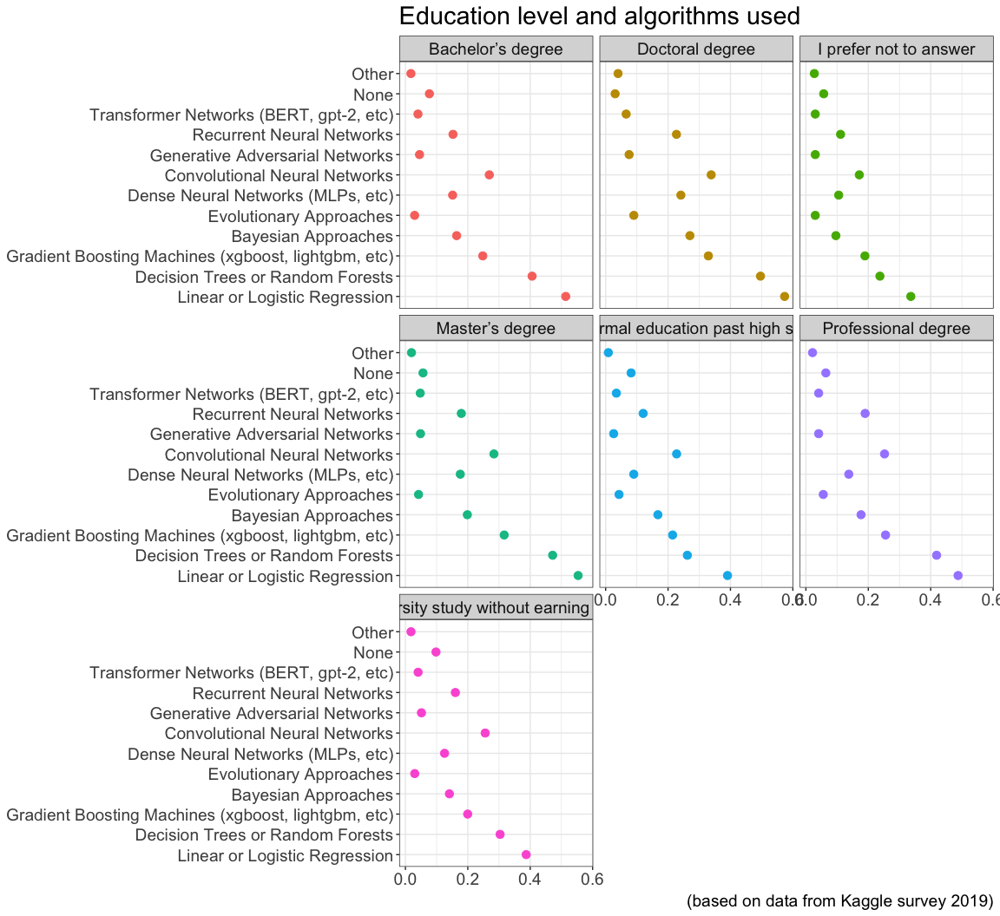
The graph above shows that regression and tree-based algorithms are very popular
They are:
- Less computationally intensive than neural networks
- Available in the de facto standard machine learning library in Python, scikit-learn.
Below historical data to some the algorithms are given, together with links to the Wikipedia article on the algorithm.
- Linear regression
- Legendre, 1805
- Gauss, 1809
- Logistic regression
- Pierre Francois Verhulst, 1830s
- Random forest
- Ho, 1995
- Gradient boosting trees
- L. Breiman, 1997
- Convolutional neural networks
- Kunihiko Fukushima, 1980
- Recurrent neural networks
- David Rumelhart, 1986
- Dense neural networks
- Independently proposed by Alexander Bain, 1873 and William James, 1890
- Generative adversarial networks
- Goodfellow, 2010-2014
23.3 Machine learning experience and algorithms
Most of the survey participants have less than 3 years machine learning experience as can be seen in the graph below. Due to fact that the number in each category differs a lot a representation of percentages is beneficial for some analysis.

The usage of algorithms for different duration of experience is given in the graph below.
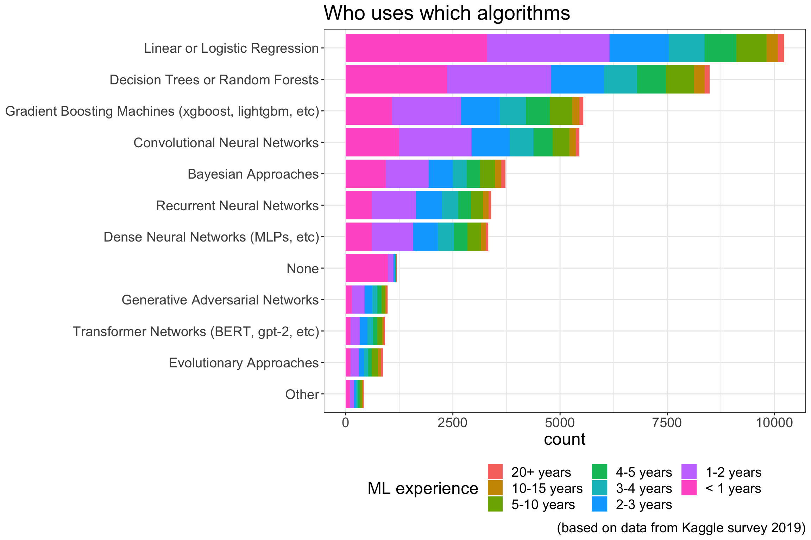
Splitting the graphs up for each category of experience and plotting the percentage of usage for the given experience level gives an insight into how the usage of algorithms differs over levels of experience

- Regression and trees are popular at all level of experience
- Neural networks are more popular for less experienced
- 20% of very experienced use no algorithm
23.4 Experience and new algorithms
Newer algorithms there are:
- Evolutionary Approaches
- Transformer Networks (BERT, gpt-2, etc)
- Generative Adversarial Networks
where evolutionary approaches have been around for quite some time but the usage of them in machine learning is rather recent.

Splitting the graphs up for each category of experience and plotting the percentage of usage for the given experience level gives an insight into how the usage of new algorithms differs over levels of experience

From the above graph it can be deducted that:
- Very experienced use new algorithms less often
- Newbies embrace them
- Evolutionary approaches are popular for medium experienced
23.5 Role of participants
The role of the participants is shown in the graph below

The numbers for certain categories certainly have to be taken with a grain of salt since it is not clear how well participants will differentiate e.g. “Data Scientist” and “Data Analyst”. However, it is clear that students are quite active on Kaggle. This might influence the later data since students tend to use freeware more than professionals.
Also there are:
- Many Software engineers
- Very few Statistician
23.6 Company size
The company size of the participants is shown in the graph below
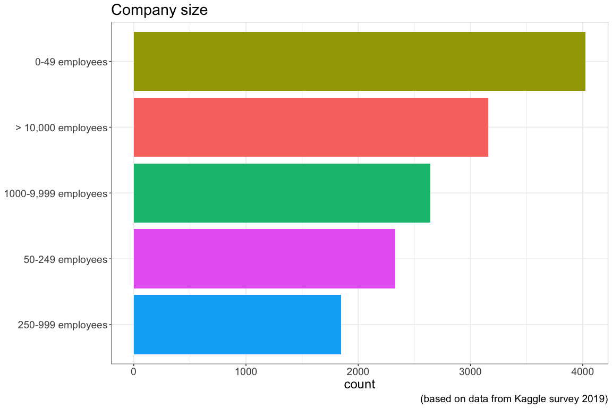
- Largest group of participants are from small companies
- Second largest group of participants are from small companies
23.7 Company incorporation of machine learning
The degree of machine learning utilization in the companies of the participants is shown in the graph below

All participants of companies with > 10,000 employees declare that "We have well established ML methods (i.e., models in production for more than 2 years)"
Splitting the graphs up for each category of company size and plotting the incorporation of machine learning shows this even more clearly
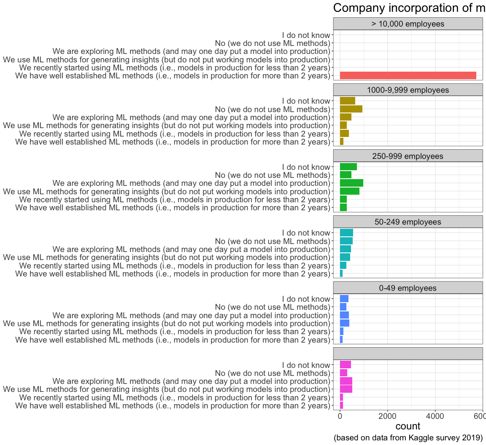
Leaving out the “> 10,000 employees” category for better comparison

- More companies explore machine learning than having it established
- Many companies don’t use machine learning
- However, their employees invest in ML
- Danger of loosing employees
- Maybe companies are slow to discover ML potential
23.8 Favourite media sources on data science topics
The Favourite media sources on data science topics are shown in the graph below
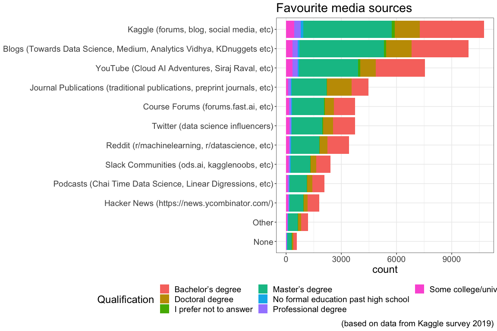
The last Qualification which is cut off in the legend in the plot above reads “Some college/university study without earning a bachelor’s degree”
Those sources offer information about: - Algorithms - New publications - Projects - Releases of new software versions - Recommended courses, popular platforms see Favourite online course platform
A few links to sources are given below
23.9 Favourite online course platform
Platforms on which survey participants have begun or completed data science courses are shown in the graph below
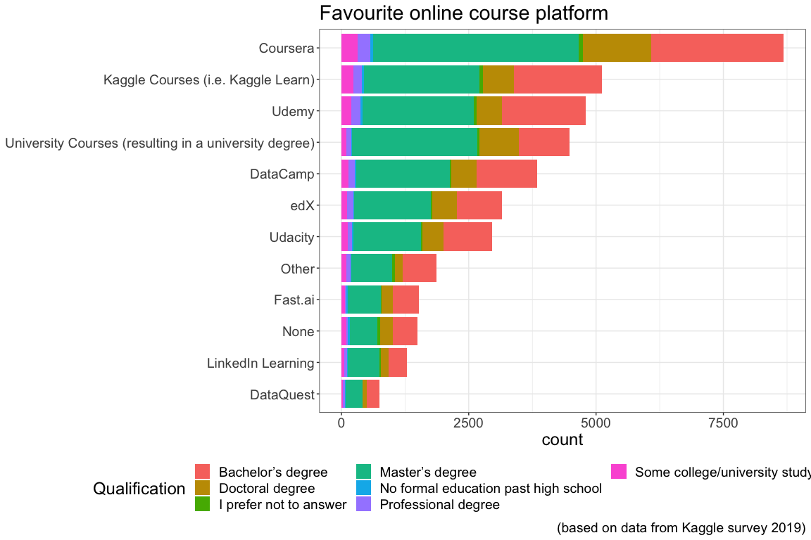
All levels of academics are active on online course platforms. Below there are links to some of the platforms:
23.10 Favourite data analyzing tool
Participants primary tool to analyze data are shown in the graph below
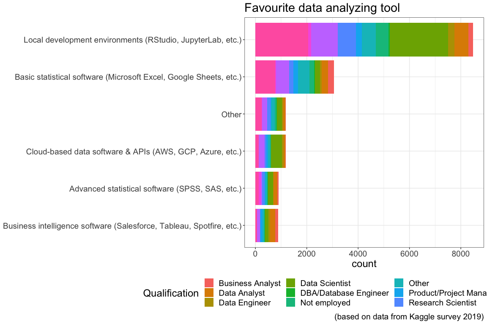
Most like to use free tools using the programming language “R” and “Python”
23.11 Experience in data analysis coding
The duration of participants writing code to analyze data is shown in the graph below

The last Qualification which is cut off in the legend in the plot above reads “Some college/university study without earning a bachelor’s degree”
- Most have less than 5 years coding experience in data analysis
- Data analysis can be done without writing code
23.12 Favourite integrated development environments (IDE’s)
Favourite integrated development environments (IDE’s) are shown in the graph below
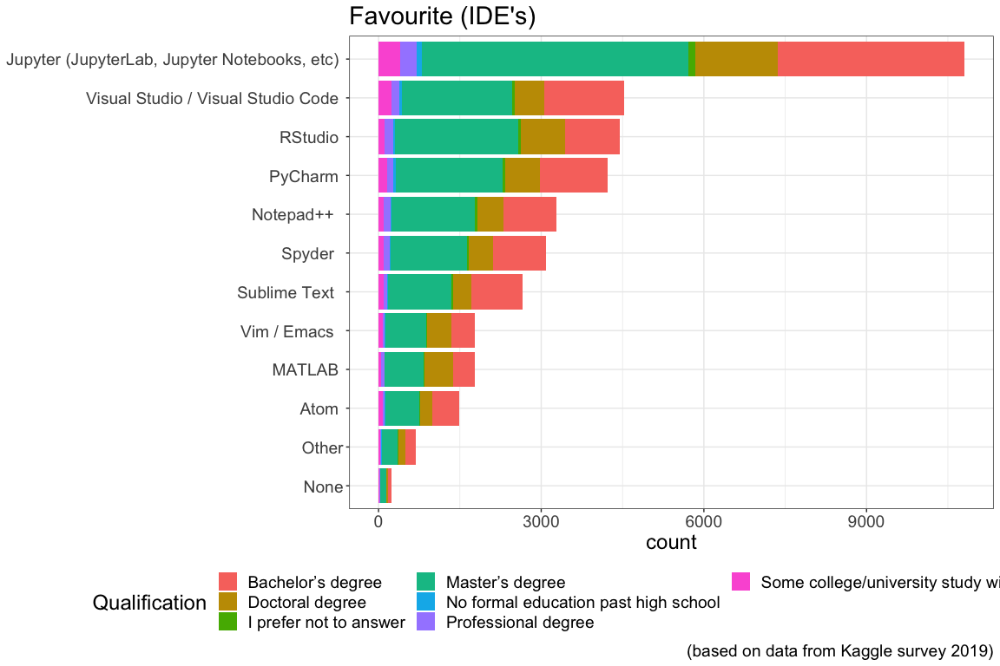
The last Qualification which is cut off in the legend in the plot above reads “Some college/university study without earning a bachelor’s degree”
Below a list of some IDEs, all of them are free except for Matlab.
- Jupyter Notebook
- Works with Python, R, Julia, C++, Ruby
- Visual Studio Code
- Works with Python, R, Julia, C++, Ruby , SQL, XML, Swift, JSON, Perl, Sass…
- Debugger
- Variable viewer
- Console
- RStudio
- Mainly for R
- Debugger
- Variable viewer
- Console
- PyCharm
- For Python
- Debugger
- Variable viewer
- Matlab
- Very well established in industry
- Originally for control tasks
- Commercial tool
- Own syntax
23.13 Favourite hosted notebook products
Favourite hosted notebook products are shown in the graph below
 The last Qualification which is cut off in the legend in the plot above reads “Some college/university study without earning a bachelor’s degree”
The last Qualification which is cut off in the legend in the plot above reads “Some college/university study without earning a bachelor’s degree”
Hosted notebooks offer a very easy and comfortable start into writing machine learning code. Some of them are free. Some of them provide many examples from which valuable techniques can be learned.
- Kaggle Notebooks
- Great place to find machine learning examples
- Google Colab
- Colaboratory is a free Jupyter notebook environment that requires no setup and runs entirely in the cloud
- Binder
- Open notebooks in executable environment
- Microsoft Azure Notebooks
- Develop and run code from anywhere with Jupyter notebooks on Azure
- Paperspace
- Powering next-generation applications and cloud ML/AI pipelines.
23.14 Favourite programming languages
Favourite programming languages are shown in the graph below

The last Qualification which is cut off in the legend in the plot above reads “Some college/university study without earning a bachelor’s degree”
Hands down the most popular programming language for machine learning is Python. If speed matters C++ is the way to go, but still, Python can be used for prototyping.
23.15 Recommended entry programming language
Recommended programming language for aspiring data scientist to learn first are shown in the graph below

The last Qualification which is cut off in the legend in the plot above reads “Some college/university study without earning a bachelor’s degree”
As Python is the most popular machine learning programming language it is not surprising that it is also the most recommended one for beginners.
23.16 Favourite data visualization libraries or tools
Favourite data visualization libraries or tools are shown in the graph below

The last Qualification which is cut off in the legend in the plot above reads “Some college/university study without earning a bachelor’s degree”
With Matplotlib there is a clear winner, however, ggplot2 is the clear Favourite in the R world.
- Matplotlib
- Matplotlib is a Python 2D plotting library which produces publication quality figures in a variety of hard copy formats and interactive environments across platforms
- Seaborn
- Seaborn is a Python data visualization library based on matplotlib. It provides a high-level interface for drawing attractive and informative statistical graphics.
- ggplot2
- ggplot2 is a system for declaratively creating graphics, based on The Grammar of Graphics
- Available for R and Python
- Plotly
- Interactive plots
- Available for R and Python
- D3.js
- Data-Driven Documents
- Javascript based
- Can be used from R and Python
- Bokeh
- Bokeh is an interactive visualization library for modern web browsers.
23.17 Favourite specialized hardware
Favourite specialized hardware are shown in the graph below
 The last Qualification which is cut off in the legend in the plot above reads “Some college/university study without earning a bachelor’s degree”
The last Qualification which is cut off in the legend in the plot above reads “Some college/university study without earning a bachelor’s degree”
- CPU => Central Processing Unit
- Performs basic arithmetic, logic, and input output instructions
- Heart of every computing device
- GPU => Graphics Processing Unit
- Optimized processor for graphics
- Very fast matrix multiplication => speeds up neural network computation
- TPU => Tensor Processing Unit
- A tensor processing unit (TPU) is an AI accelerator application-specific integrated circuit (ASIC) developed by Google specifically for neural network machine learning.
- Edge TPU
- 4 TOPs19
- 2W
In Wei, Brooks, and others (2019) a comparison of the three processors with respect to machine learning capabilities is given:
• TPU is highly-optimized for large batches and CNNs, and has the highest training throughput
• GPU shows better flexibility and programmability for irregular computations, such as small batches and non- MatMul computations. The training of large FC models also benefits from its sophisticated memory system and higher bandwidth.
• CPU has the best programmability, so it achieves the highest FLOPS utilization for RNNs, and it supports the largest model because of large memory capacity.
23.18 Favourite machine learning frameworks
Favourite machine learning frameworks are shown in the graph below
 The last Qualification which is cut off in the legend in the plot above reads “Some college/university study without earning a bachelor’s degree”
The last Qualification which is cut off in the legend in the plot above reads “Some college/university study without earning a bachelor’s degree”
- Scikit-learn
- Machine Learning in Python
- Open source, commercially usable - BSD license
- TensorFlow
- An end-to-end open source machine learning platform
- Keras
- Keras is a high-level neural networks API, written in Python and capable of running on top of TensorFlow, CNTK, or Theano.
- RandomForest
- A random forest classifier
- Xgboost
- XGBoost is an optimized distributed gradient boosting library designed to be highly efficient, flexible and portable.
- PyTorch
- An open source machine learning framework that accelerates the path from research prototyping to production deployment.
- On 30.01.2020 OpenAI announced OpenAI ‚Üí PyTorch
- LightGBM
- LightGBM is a gradient boosting framework that uses tree based learning algorithms.
- Caret
- The caret package (short for Classification And REgression Training) is a set of functions that attempt to streamline the process for creating predictive models.
- For the programming language R
- Fast.ai
- Making neural nets uncool again
- Blogs
- MOOC20
23.19 Favourite cloud computing platforms
Favourite cloud computing platforms are shown in the graph below
 The last Qualification which is cut off in the legend in the plot above reads “Some college/university study without earning a bachelor’s degree”
The last Qualification which is cut off in the legend in the plot above reads “Some college/university study without earning a bachelor’s degree”
- Amazon Web Services (AWS)
- AWS has the services to help you build sophisticated applications with increased flexibility, scalability and reliability
- Google Cloud Platform (GCP)
- Build scalable apps
- Microsoft Azure
- Turn ideas into solutions with more than 100 services to build, deploy, and manage applications—in the cloud, on-premises, and at the edge—using the tools and frameworks of your choice.
- IBM Cloud
- Discover a faster, more secure journey to cloud trusted by thousands of enterprises across 20 industries
- VMware Cloud
- Manage your entire app portfolio across hybrid and native public clouds
- Oracle Cloud
- Oracle Cloud is a cloud computing service offered by Oracle Corporation providing servers, storage, network, applications and services through a global network of Oracle Corporation managed data centers.
- Salesforce Cloud
- Try the world’s #1 service platform: the time-saving, joy-boosting, relationship-building machine.
- Alibaba Cloud
- Experience the Latest in Cloud Computing, Storage, Networking, Security, Big Data and Artificial Intelligence on Alibaba Cloud
- SAP Cloud
- Achieve process excellence, deliver engaging digital experiences, and simplify data-driven innovation with a multi-cloud architecture.
- Red Hat Cloud
- Red Hat® Cloud Access is the program that allows our customers to run eligible Red Hat product subscriptions on certified public cloud providers.
23.20 Favourite big data / analytics products
Favourite big data / analytics products are shown in the graph below

The last Qualification which is cut off in the legend in the plot above reads “Some college/university study without earning a bachelor’s degree”
23.21 Favourite automated machine learning tools (or partial AutoML tools)
Favourite automated machine learning tools (or partial AutoML tools) are shown in the graph below
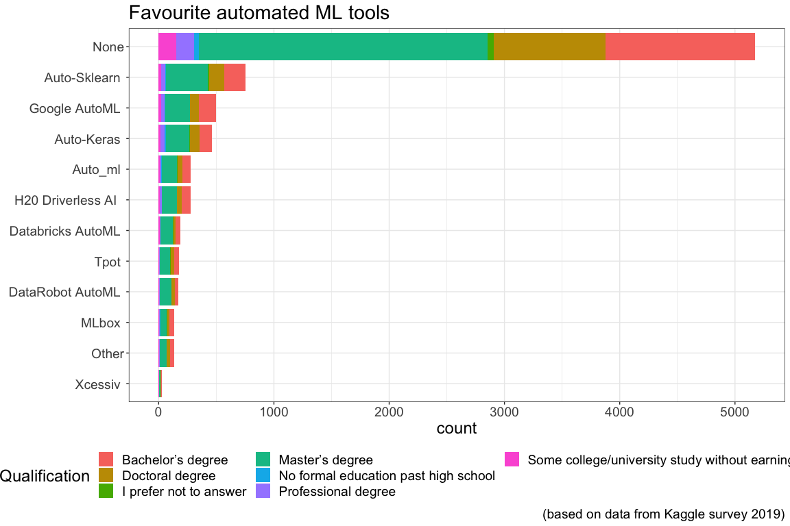 The last Qualification which is cut off in the legend in the plot above reads “Some college/university study without earning a bachelor’s degree”
References
Ayres, Ian. 2007. Super Crunchers: Why Thinking-by-Numbers Is the New Way to Be Smart. Bantam Books.
Barachant, Alexandre, Stéphane Bonnet, Marco Congedo, and Christian Jutten. 2013. “Classification of Covariance Matrices Using a Riemannian-Based Kernel for Bci Applications.” Neurocomputing 112: 172–78.
Binet, Alfred, and Th Simon. 1916. “New Methods for the Diagnosis of the Intellectual Level of Subnormals.(L’Année Psych., 1905, Pp. 191-244).”
Bojarski, Mariusz, Anna Choromanska, Krzysztof Choromanski, Bernhard Firner, Larry Jackel, Urs Muller, and Karol Zieba. 2016. “Visualbackprop: Efficient Visualization of Cnns.” arXiv Preprint arXiv:1611.05418.
Bojarski, Mariusz, Philip Yeres, Anna Choromanska, Krzysztof Choromanski, Bernhard Firner, Lawrence Jackel, and Urs Muller. 2017. “Explaining How a Deep Neural Network Trained with End-to-End Learning Steers a Car.” arXiv Preprint arXiv:1704.07911.
Goodfellow, Ian J, Jonathon Shlens, and Christian Szegedy. 2014. “Explaining and Harnessing Adversarial Examples.” arXiv Preprint arXiv:1412.6572.
Gottfredson, Linda S. 1997. “Mainstream Science on Intelligence: An Editorial with 52 Signatories, History, and Bibliography.” Citeseer.
Harari, Yuval Noah. 2016. Homo Deus: A Brief History of Tomorrow. Random House.
James, Gareth, Daniela Witten, Trevor Hastie, and Robert Tibshirani. 2013. An Introduction to Statistical Learning. Vol. 112. Springer.
Kahneman, Daniel. 2011. Thinking, Fast and Slow. Macmillan.
Kuhn, Max, and Kjell Johnson. 2013. Applied Predictive Modeling. Vol. 26. Springer.
Russakovsky, Olga, Jia Deng, Hao Su, Jonathan Krause, Sanjeev Satheesh, Sean Ma, Zhiheng Huang, et al. 2015. “ImageNet Large Scale Visual Recognition Challenge.” International Journal of Computer Vision (IJCV) 115 (3): 211–52. https://doi.org/10.1007/s11263-015-0816-y.
Tegmark, Max. 2017. Life 3.0: Being Human in the Age of Artificial Intelligence. Knopf.
Temko, A, E Thomas, W Marnane, G Lightbody, and G Boylan. 2011a. “EEG-Based Neonatal Seizure Detection with Support Vector Machines.” Clinical Neurophysiology 122 (3): 464–73.
Temko, A, E Thomas, W Marnane, G Lightbody, and GB Boylan. 2011b. “Performance Assessment for Eeg-Based Neonatal Seizure Detectors.” Clinical Neurophysiology 122 (3): 474–82.
Tulio Ribeiro, Marco, Sameer Singh, and Carlos Guestrin. 2016. “" Why Should I Trust You?": Explaining the Predictions of Any Classifier.” arXiv Preprint arXiv:1602.04938.
Wei, Gu-Yeon, David Brooks, and others. 2019. “Benchmarking Tpu, Gpu, and Cpu Platforms for Deep Learning.” arXiv Preprint arXiv:1907.10701.
Widmaier, Mark, Maximilian Arnold, Sebastian Dorner, Sebastian Cammerer, and Stephan ten Brink. 2019. “Towards Practical Indoor Positioning Based on Massive Mimo Systems.” In 2019 Ieee 90th Vehicular Technology Conference (Vtc2019-Fall), 1–6. IEEE.
Zhang, Zhongxing, Geert Mayer, Yves Dauvilliers, Giuseppe Plazzi, Fabio Pizza, Rolf Fronczek, Joan Santamaria, et al. 2018. “Exploring the Clinical Features of Narcolepsy Type 1 Versus Narcolepsy Type 2 from European Narcolepsy Network Database with Machine Learning.” Scientific Reports 8 (1): 1–11.
Zhu, Jun-Yan, Taesung Park, Phillip Isola, and Alexei A Efros. 2017. “Unpaired Image-to-Image Translation Using Cycle-Consistent Adversarial Networks.” In Computer Vision (Iccv), 2017 Ieee International Conference on.
American pioneer in the field of computer gaming and artificial intelligence https://en.wikipedia.org/wiki/Arthur_Samuel↩︎
professor of Computer Science and Machine Learning at Carnegie Mellon http://www.cs.cmu.edu/~tom/↩︎
17*35=595↩︎
Knowledge neglect https://en.wikipedia.org/wiki/Knowledge_neglect↩︎
Die drei letzten Bundespräsidenten: Steinmeier, Gauck, Wulf↩︎
Pingo question: What is the probability that the cab involved in the accident was Blue rather than Green? https://pingo.coactum.de/questions↩︎
Screening mammography aims to identify breast cancer at earlier stages of the disease, when treatment can be more successful. Despite the existence of screening programmes worldwide, the interpretation of mammograms is affected by high rates of false positives and false negatives. Here we present an artificial intelligence (AI) system that is capable of surpassing human experts in breast cancer prediction. To assess its performance in the clinical setting, we curated a large representative dataset from the UK and a large enriched dataset from the USA. We show an absolute reduction of 5.7% and 1.2% (USA and UK) in false positives and 9.4% and 2.7% in false negatives. We provide evidence of the ability of the system to generalize from the UK to the USA. In an independent study of six radiologists, the AI system outperformed all of the human readers: the area under the receiver operating characteristic curve (AUC-ROC) for the AI system was greater than the AUC-ROC for the average radiologist by an absolute margin of 11.5%. We ran a simulation in which the AI system participated in the double-reading process that is used in the UK, and found that the AI system maintained non-inferior performance and reduced the workload of the second reader by 88%. This robust assessment of the AI system paves the way for clinical trials to improve the accuracy and efficiency of breast cancer screening. https://www.nature.com/articles/s41586-019-1799-6↩︎
Abstract With an estimated 160,000 deaths in 2018, lung cancer is the most common cause of cancer death in the United States1. Lung cancer screening using low-dose computed tomography has been shown to reduce mortality by 20–43% and is now included in US screening guidelines. Existing challenges include inter-grader variability and high false-positive and false-negative rates. We propose a deep learning algorithm that uses a patient’s current and prior computed tomography volumes to predict the risk of lung cancer. Our model achieves a state-of-the-art performance (94.4% area under the curve) on 6,716 National Lung Cancer Screening Trial cases, and performs similarly on an independent clinical validation set of 1,139 cases. We conducted two reader studies. When prior computed tomography imaging was not available, our model outperformed all six radiologists with absolute reductions of 11% in false positives and 5% in false negatives. Where prior computed tomography imaging was available, the model performance was on-par with the same radiologists. This creates an opportunity to optimize the screening process via computer assistance and automation. While the vast majority of patients remain unscreened, we show the potential for deep learning models to increase the accuracy, consistency and adoption of lung cancer screening worldwide. Website: https://www.nature.com/articles/s41591-019-0447-x↩︎
Homepage of ILSVRC http://www.image-net.org/challenges/LSVRC/↩︎
Homepage of ImageNet http://www.image-net.org↩︎
https://deepmind.com/blog/article/alphago-zero-starting-scratch↩︎
Homepage of DeepMind https://deepmind.com↩︎
Pingo question: Ihre Position zur AGI? https://pingo.coactum.de/questions↩︎
“Dataism was born from the explosive confluence of two scientific tidal waves. In the 150 years since Charles Darwin published On the Origin of Species, the life sciences have come to see organisms as biochemical algorithms. Simultaneously, in the eight decades since Alan Turing formulated the idea of a Turing Machine, computer scientists have learned to engineer increasingly sophisticated electronic algorithms. Dataism puts the two together, pointing out that exactly the same mathematical laws apply to both biochemical and electronic algorithms. Dataism thereby collapses the barrier between animals and machines, and expects electronic algorithms to eventually decipher and outperform biochemical algorithms.” Harari, Yuval Noah. Homo Deus: A Brief History of Tomorrow . HarperCollins. Kindle Edition. ↩︎
Good source for feature engineering: http://www.feat.engineering/index.html↩︎
using the median of all 13 models to determine which 9 models seemed best, then taking the mean of a few different medians of the different model predictions↩︎
Good source for feature engineering: http://www.feat.engineering/index.html↩︎
Tera Operations Per Second↩︎
Massive Open Online Courses↩︎